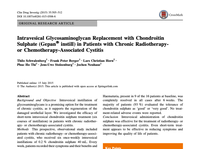
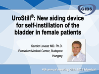

ESSIC 2017 Budapest abstracts
Share on Social Networks
Share Link
Use permanent link to share in social mediaShare with a friend
Please login to send this document by email!
Embed in your website
1. ABSTRACT BOOK Meeting Chair Sándor Lovász BUDAPEST Hungarian Academy of Sciences ESSIC 2017 21-23 September ESSIC International Society for the Study of Bladder Pain Syndrome
2. Dear Guests & Friends, It is my pleasure and honour having the chance to organize the Annual Meeting of ESSIC 2017 in Budapest, Hungary. This country offers a quite good example of a territory with a low detection rate of BPS and insufficient cooperation between urologists, gynaecologists and GPs. Therefore, having the ESSIC meeting in Budapest is a big opportunity for us to reverse this trend. I am confident Budapest will be a proper venue for this challenging conference and health professionals will certainly deliver new and inspiring ideas. ESSIC is furthermore the right organization to discuss, collect and share new thoughts, ideas, and innovations; new generations of doctors are expected to contribute with alternative and original proposals in this medical area. Besides this uniquely inspiring scientific programme, it is worth mentioning that Budapest is a beautiful capital, with a 2000 year old history; it also offers magnificent buildings and stunning views from both sides of the Danube. Budapest therefore has all it takes to become for you a pleasurable journey; you may even end up considering to come back to the city for a long family holiday. Looking forward to welcoming you all in Budapest on September 2017. Warmest Regards Sándor Lovász ESSIC Meeting Chair 2017 MEETING CHAIR MESSAGE ESSIC PRESIDENT MESSAGE Dear all, I hope to see many of you during the upcoming ESSIC annual scientific meeting in Budapest, September 21-23 2017. A lot is happening in the world of chronic pelvic pain and bladder pain syndrome. Several new treatment modalities are under research and much is being learnt from more extended clinical studies. Many items will be presented and discussed when we meet. With your help ESSIC is in the process of being built into the World Scientific Society on these topics. Come and meet the new Board Members and join the discussion also on the administrative and educational developments. Budapest is a wonderful city and those who have visited before will agree with me. The local host Prof S á ndor Lov á sz is well known to us and a longstanding authority in the field. So take your agenda and block the dates. It will be worthwhile. J.J. Wyndaele ESSIC President ESSIC 2017 Abstract Collection All rights reserved. No part of this publication may be reproduced, stored or transmitted in any form or by any means without the prior permission in writing from the copyright holder. Authorization to photocopy items for internal and personal use is granted by the copyright holder. This consent does not extend to other kinds of copying such as copying for general distribution, for advertising or promotional purposes, for creating new collective works or for resale. Special requests should be addressed to the ESSIC Society and to the editor [email protected] 2017 by Defoe ® - Graphic Design, editing, release ESSIC EXECUTIVE COMMITTEE ESSIC BOARD Jean-Jacques Wyndaele, President (Antwerp, Belgium) Mauro Cervigni, Vice President (Rome, Italy) Jørgen Nordling, Treasurer (Copenhagen, Denmark) Philip Hanno (Palo Alto, USA) Magnus Fall (Göteborg, Sweden) Rajesh Taneja (New Delhi, India) Tomohiro Ueda (Kyoto, Japan) Joop P van de Merwe (Rotterdam, The Netherlands) Andrew Zaitcev (Moscow, Russia)
44. With the unrestricted grant of PCO and ESSIC Office T. +39.0523.338391 | [email protected] | www.defoe.it ®
16. ESSIC 2017 - 14- ESSIC 2017 ABSTRACT BOOK SIXTH SESSION | Specific types of BPS patients coconut water would help reducing it. The acid in the urine causes worsening of pain, which is rapidly neutralized by urinary alkaliser. Thus dietary modifications are expected to reduce the symptoms of painful bladder. Extrapolating the same, we could identify, in a subset of patients, certain dietary initiators of urothelial injury. Painful frequency of urine has been associated with newly added ‘herbal tea’ in some individuals. There is lot of information on Internet as to the lists of dietary ingredients that are known to be harmful for the patients with IC. However, neither these lists are comprehensive nor are they universal. Some individuals would tend to tolerate the food articles which others would find injurious. Hence these patients should have a detailed interview to ascertain the possibility of diet related primary urothelial injury or dietary perpetuation of pathological process. Once identified, these patients should be encouraged to build their own diet charts and mark favorable and unfavorable dietary items. They should be encouraged to share this information in the various patient groups through social media so that other patients could benefit from their individual experience. ________________________________________ 7th SESSION | Male BPS The male patient | R. Moldwin Roundtable | The male BPS patient Moderators: M. Fall, R. Moldwin
15. ESSIC 2017 - 13- ESSIC 2017 ABSTRACT BOOK SIXTH SESSION | Specific types of BPS patients R replenishment therapy might be an effective treatment for patients with rUTI as well. On the other hand, the role of microbes in BPS also has to be reconsidered in light of advances in modern microbiology. Rapidly increasing evidence shows the fundamental role of the complicated ecosystem of human microbiota in our body: e.g. the gut, skin or vaginal flora. Recently, the use of highly sensitive DNA sequencing techniques also revealed the presence of urinary microbiota. The term urinary microbiota is used for communities of microbes normally present in the lower urinary tract of healthy individuals - whose urine was previously considered sterile with standard culturing techniques. Studies of different body systems suggest that the microbiota is critical in the maintenance of health or development of diseases. Therefore, we have to move forward from the concept of sterile urine and re-evaluate our knowledge about many different urological disorders. For example, it has been shown that women with BPS have a less diverse urinary microbiota than those without. However, the causality of this relationship has to be further elucidated. These results underline the importance of collaboration and joint research between the experts of BPS and urological infectology and microbiology. Future studies should aim to deepen our understanding of the complex interactions between the two research areas. Role of diet in Bladder Pain Syndrome Author: Rajesh Taneja Senior Consultant, Urology Andrology and Robotic Surgery, Indraprastha Apollo hospitals, New Delhi _________________________________________ The urinary bladder serves as the final ‘storage’ reservoir for the metabolic end products of all the ‘enteral’ feed that is absorbed across the membranes of the digestive tract. Therefore, urinary bladder has been endowed with a tough lining, consisting of the multilayered transitional epithelium and a complex layer of Glycosamine glycans (GAG), which protects the bladder from the highly concentrated solutes, actively defending against their back diffusion into body tissues. Thi s mechanism has been admirably designed by nature not only to be impenetrable but also resistant to insult and injury. However everything that is meant to be ‘unbreakable’ is actually unbreakable only within certain limits. This holds true for the urothelial barrier as well. Thus, repeated assaults over prolonged periods of time by a particular subset of urinary constituents could drive the impeccability of the urothelial barrier beyond the limits of tenability. This would be expected to result in damage and consequent leakage of the constituents of the urine, initiating an inflammatory response in the tissues of urinary bladder. Since it is the final metabolites of ‘ente ral absorbable portion’ of diet that might determine the risk of damage to the urothelial barrier, it ca n be extrapolated that certain elements in the diet might be harmful to the bladders in susceptible individuals. There may be three ways in which dietary constituents could be involved in the pathogenesis of Bladder Pain Syndrome 1) Initiating the injury to urothelial barrier. Inj ury to the urothelium could occur by following mechanisms. a) Direct assault on the urothelium by the shear nature of the component of urine, e.g persistent intense acidic pH along with certain acidic catalysts, which could damage the GAG layer of the urothelium. b) Allergic manifestation in response to the urinary constituents. The final chemical nature of the resultant solution after mixing of the various excreted metabolites of different dietary items may be allergenic by way of contact with urothelium. II) Perpetuation of injury. Once the injury to urothelial barrier has occurred, the damage may be perpetuated by repeated assaults of not only the same urinary constituents which initiated the injury but also by those, which were earlier incapable of causing injury, and now may become harmful due to increased vulnerability of the altered urothelium. Thus perpetuation of injury could occur by two mechanisms a) Direct damage to already vulnerable urothelium b) Seepage of the contents into deeper layers of bladder causing neurogenic inflammation by exciting pain fibers. III) Direct nociferous effect of urinary constituen ts on the exposed nerve endings on damaged urothelium. The simplest example of this phenomenon is dysuria that occurs following an endourological procedure. Taking a cup of strong coffee or a spicy meal would worsen the dysuria while ingesting a urinary alkaliser or tender
39. ESSIC 2017 - 37- ESSIC 2017 ABSTRACT BOOK POSTERS Poster n. 10 (page 22)
40. ESSIC 2017 - 38- ESSIC 2017 ABSTRACT BOOK POSTERS Poster n. 11 (page 22)
14. ESSIC 2017 - 12- ESSIC 2017 ABSTRACT BOOK SIXTH SESSION | Specific types of BPS patients I Peters et al. reported that vestibulodynia affects 25% of women with PBS/IC. (3) The etiology of vulvodynia is presumed to involve many factors: infections and altered vaginal acidbase balance, an d the upregulation of pro-inflammatory immune responses. (4) Furthermore, a large community- based study found that vulvodynia was strongly associated with childhood physical or sexual abuse.(5) Because both the vestibule of the vulva and the bladder are derived from the urogenital sinus, it could be hypothesized that the coexistence of vulvodynia and BPS/IC in some patients represents a generalized disorder of urogenital sinus-derived epithelium. (6) From a histological point of view, various noxious stimula could cause changes in the vulvar epithelium: contraction in the pelvic floor, and mast cells activation with subsequent degranulation and release of histamine. This causes chronic pain and inflammation through the stimulation of peripheral neurons of the autonomic nervous system, an upregulation of the pain system, and a possible shift from nociceptive to neuropathic pain. (7) The standard clinical test for vulvodynia is the cotton swab (Q- tip) test, measuring vulvar pain ratings on a visua l analog scale. (8) Several studies have shown that gabapentin has a role as tricyclic, yielding significant results in reducing pain perception. (9) More than 80% of patients have reported improvements.(10) More recently, botulinum toxin has been proposed for the treatment of vulvodynia. It was found that the visual analog scale score was reduced from 8.1 to 2.5 (P < 0.001), and eight (72.7%) out of 11 patients were satisfied. (11) References 1. Leclair CM, Goetsch MF, Korcheva VB et al. Differences in primary compared with secondary vestibulodynia by immunohistochemistry. Obstet. Gynecol. 2011; 117: 1307–13. 2. Nguyen RHN, Veasley C, Smolenski D. Latent class analysis of comorbidity patterns among women with generalized and localized vulvodynia: preliminary findings. J Pain Res. 2013; 6:303–9. 3. Peters K, Girdler B, Carrico D, Ibrahim I, Diokn o A. Painful bladder syndrome/interstitial cystitis a nd vulvodynia: a clinical correlation. Int. Urogynecol . J. Pelvic Floor Dysfunct. 2008; 19: 665–9. 4. Lowenstein L, Vardi Y, Deutsch M et al. Vulvar vestibulitis severity –assessment by sensory and pa in testing modalities. Pain 2004; 107:47–53. 5. Harlow BL, Stewart EG. Adult-onset vulvodynia in relation to childhood violence victimization. Am. J . Epidemiol. 2005; 161: 871–80. 6. Fitzpatrick CC, DeLancey JOL, Elkins TE, McGuire EJ. Vulvar vestibulitis and Interstitial Cystitis: a disorder of urogenital sinus derived epithelium. Obstet. Gynecol. 1993; 81: 860–2. 7. Glazer HI, Rodke G, Swencionis C, Herts R, Young AW. Treatment of vuvlvar vestibulitis syndrom e with electromiographic biofeedback of pelvic floor musculature. J. Reprod. Med. 1995; 40: 283–90. 8. Pukall CF, Binik YM, Khalife S, Amsel R, Abbot FV. Vulvar tactile and pain thresolds in women with vulvar vestibulitis syndrome. Pain 2002; 96:163–75. 9. van Lankveld JJ, Granot M, Weijmar Schultz WC et al. Women’s sexual pain disorders. J. Sex. Med. 201 0; 7 (1 Pt 2): 615–31. 10. Ben-David B, Friedman M. Gabapentin therapy for vulvodynia. Anesth. Analg. 1999; 89: 1459–60. 11. Jeon Y, Kim Y, Shim B et al. A retrospective st udy of the management of vulvodynia. Korean J. Urol. 2013; 54: 48–52. Infection and IC Author: Bela Köves MD, PhD, Jahn Ferenc South-Pest Hospital, Dept. of Urology, Budapest, Hungary ________________________________________ Since Bladder Pain Syndrome (BPS) and recurrent urinary tract infections (rUTI) present with very similar symptoms, many women with BPS are initially mistreated for UTI leading to late diagnosis and treatment. Therefore, correct differential diagnosis is mandatory for patients presenting with chronic or recurrent symptoms of painful and frequent urination. The diagnosis of rUTI always has to be established based on microbiologically proven infectious episodes. Although BPS and rUTI are traditionally considered separate diseases, growing number of evidence suggests that there is a dynamic relation between the two conditions. The deficiency of the glycosaminoglycan (GAG) layer was proposed to be a risk factor for rUTI, as it creates ideal conditions for bacteria to reach the subepithelial layers of the bladder wall and to form intracellula r reservoirs called Intracellular Bacterial Communities (IBC). Furthermore, patients suffering from rUTI might develop a secondary GAG layer deficiency as a result of the chronic inflammation caused by their recurrent infections. Consequently, intravesical GAG layer
7. ESSIC 2017 - 5- ESSIC 2017 ABSTRACT BOOK THIRD SESSION | GAG replenishment G chondroitin sulphate, pentosane polysulphate and DMSO included 5 prospective randomized controlled trials (RCT), the remaining were classified as uncontrolled clinical studies. The to tal number of patients included was 801, of which 228 had been evaluated in a RCT. For RCTs, the largest effect size for symptom reduction as well a s response rate was observed for high molecular weight hyaluronic acid (HMW-HA), with similar findings in two uncontrolled studies with HMW- HA. The number needed to treat for a response to intravesical therapy was 1.31 for HMW-HA and 14.93 for chondroitin sulfate. HMW-HA was also significantly superior in cost effectiveness and co st efficacy to all other instillation regimes. Conclusion: Despite the absence of large randomized studies, current instillation regimes ar e effective therapies for BPS/IC. Different outcomes for presently available instillates have been reported. The clinical impact of these observations has to be evaluated in future. GAG Layer Replenishment in Bladder Pain Syndrome Author: Rajesh Taneja Senior Consultant and Coordinator, Urology, Andrology and Robotic Surgery, Indraprastha Apollo Hospitals, New Delhi, India ________________________________________ Urinary Bladder has the difficult task of storing urine, a highly concentrated acidic solution, against the physical reactions like diffusion and possible chemical reactions with the live bladder tissues. This is possible due to the unique structu re of urothelium, which forms this effective barrier. Glycosamine Glaycans (GAG) layer is the direct non-living interface between the superficial layer of living transitional epithelium and urine. Thus a s is evident, GAG layer happens to be key component of urothelial barrier. GAG layer faces the brunt of the harsh nature of urine and hence has a possibility of being ‘consumed’ during the period of contact while storing urine. Being a product of transitional epithelium, GAG layer needs to be replenished continually. Deficient GAG layer can understandably result in diffusion of constituents of urine and further damage to various layers of the urinary bladder, exposing the sensory nerve endings generating pain. Thus replenishment of GAG layer is likely to play a key role in the treatment of BPS of various etiologies The naturally present GAG substances are • Hyaluronic acid • Heparin Sulphate • Heparin • Chondroitin 4 Sulphate • Chondroitin 6 Sulphate • Dermatan Sulphate • Keratan Sulphate Clinically available GAG replenishing molecules are • Heparin • Pentosan Poly Sulphate • Hyaluronic acid • Chondroitin Sulphate • Combination of Hyaluronic acid and Chondroitin Sulphate Heparin Heparin is naturally occurring GAG substance and is quiet inexpensive and readily available. The use of intravesical Heparin for Bladder pain syndrome (then called Interstitial Cystitis) was first documented by Parson et al (1994). They reported improvement of symptoms in 27 out of 46 patients in whom intravesical Heparin was administered in the dose of 10,000 IU three times a week for three months. Another study by Kuo, published in 2001, reported improvement in urodynamic parameters of 29 out of 40 patients of BPS (IC). All patients were administered intravesical Heparin in the dose of 25,000 IU twice a week for three months. The volume at first sensation had increased by almost 50% and there was a statistically significant increase in t he total bladder capacity in awake condition. There was no control group in either of these studies. Heparin has been used as part of various cocktail regimes for intravesical instillations by may reserchers. Pentosan Poly sulphate (PPS) PPS is a synthetic sulphated polysaccharide that ha s heparin like properties. It has been believed to work by replenishing the damaged GAG layer of the urinary bladder mucosa, thus repairing the defective urothelial barrier. Almost 3-6% of orally ingested drug is excreted unchanged in urine. The clinical trials have demonstrated mixed results. It is recommended in the dose of 100 mg three times a day, to be taken at least 1 hour before or 2 hour s
41. ESSIC 2017 - 39- ESSIC 2017 ABSTRACT BOOK POSTERS Poster n. 1 2 (page 23 )
12. ESSIC 2017 - 10- ESSIC 2017 ABSTRACT BOOK FIFTH SESSION | Hunner lesions I currently the most popular technique (8, 9) but may also entail problems: wide coagulation enhancing bladder contracture in an organ by disease prone to develop scar contraction. YAG laser is another option of destruction of lesions (10). Although no complications were noted in initial series there have been anecdotal reports of bowel perforation. Careful setting of energy parameters is mandatory with laser, too (11). At this stage there are no comparative studies between methods but it is worth noting that in a recent large series coagulation did not result in bladder volume decrease (12) so maybe the risk of enhancing bladder contraction is modest; this is still an open question, though. There are arguments for and against all available methods with reference to possible risks/advantages related to the choice of surgical method, like the question of bladder wall scarring, postoperative bleeding, organ perforation and varying duration of remission after treatment. Sufficiently large studi es with long-range observation are of interest. Ablative treatment has stood the test of time and i s today standard treatment, in clinical practice with no need of justification as the first line treatmen t of ESSIC type 3C; with reference to efficacy there are no comparable alternatives. However, when it comes to science treatment methods require high scoring in level of evidence to earn high grades of recommendation, and grading depends on the outcome of RCTs. Few RTC:s on local ablation in BPS 3C have been produced but are required. References 1. Hunner GL. A rare type of bladder ulcer in women ; report of cases. Boston Med Surg J. 1915;172:660-4. 2. Kerr WJ. Interstitial cystitis: treatment by transurethral resection. J Urol 1971;105(5):664-6. 3. Greenberg E, Barnes R, Stewart S, Furnish T. Transurethral resection of Hunner's ulcers. J Urol. 1974;111:764-6. 4. Fall M. Conservative management of chronic interstitial cystitis: transcutaneous electrical ne rve stimulation and transurethral resection. J Urol. 1985;133:774-8. 5. Peeker R, Aldenborg F, Fall M. Complete transurethral resection of ulcers in classic inters titial cystitis. Int Urogynecol J. 2000;11:290-5. 6. Fall M, Johansson SL, Vahlne A. A clinicopathological and virological study of inters titial cystitis. J Urol. 1985;133(5):771-3. 7. Newson B, Dahlstrom A, Enerback L, Ahlman H. Suggestive evidence for a direct innervation of muc osal mast cells. Neuroscience. 1983;10(2):565-70. 8. Hillelsohn J, Rais-Bahrami S, Friedlander J, Okhunov Z, Kashan M, Rosen L, et al. Fulguration fo r Hunner ulcers: long-term clinical outcomes. J Urol 2012;188(6):2238-41. 9. Payne R, O'Connor R, Kressin M, Guralnick M. Endoscopic ablation of Hunner's lesions in intersti tial cystitis patients. Can Urol Assoc J. 2009;3(6):473- 7. 10. Rofeim O, Hom D, Freid R, Moldwin R. Use of the neodymium: YAG laser for interstitial cystitis: a prospective study. J Urol 2001;166(1):134-6. 11. Zaitcev A, Pushkar D, Diyakov V,Galchikov I. Us e of Ho:YAG laser in the treatment of patients with recurrent and interstitial cystitis. Eur Urol Suppl 2006;5(2):194. 12. Chennamsetty A, Khourdaji I, Goike J, Killinger K, Girdler B, Peters K. Electrosurgical management of Hunner ulcers in a referral center's interstitial c ystitis population. Urology 2015;85(1):74-8. IC is BPS with Hunner lesion Author: Ralph Peeker Goteborg, Sweden ________________________________________ The understanding and the perception of the term “Interstitial cystitis” have undergone several important changes during the past 100 years, moving from a chronic, true inflammatory, bladder disorder to an extensive syndrome with pain perceived to be located in the bladder/pelvic region. Comments on this development will be presented. From examples in the literature, some important features of classic interstitial cystitis will be outlined. The more inclusive approach during later decades has drawn desirable attention to the entire spectrum of disorders resulting in bladder pain. The wish to include all of them into one handy entity has unfortunately resulted in much scientific and clinical confusion, though. It will be stressed that, originally, interstitial cystitis represented the Hunner type of disease. Today, there is agreement that the classic type of interstitial cystitis with Hunner's lesions, bladde r pain syndrome type 3C according to current terminology, stands out as a well-defined phenotype; it has to evaluated separately in clinic al studies and practice, as treatment requirements as well as response differ importantly between this and other phenotypes.
38. ESSIC 2017 - 36- ESSIC 2017 ABSTRACT BOOK TENTH SESSION | Summary of Roundtables • Pain management is a primary consideration at every step of algorithm • Patient enrollment in appropriate research trial is reasonable option at any point • Evidence supporting neurostimulation, cyclosporine A, and botulinum toxin for BPS indication remains limited. These interventions are appropriate only for practitioners with experience treating BPS and willing to provide long-term care post-intervention
13. ESSIC 2017 - 11- ESSIC 2017 ABSTRACT BOOK SIXTH SESSION | Specific types of BPS patients S V Pain in the urethra Author: Sándor Lovász MD. PhD, Urologist, Rózsakert Medical Center, Budapest ____________________________________________ Analysis of the anamnestic data of the 52 IC/BPS patients diagnosed in the first six months this yea r proved that 36/52 (70%) of the patients had expressed urethral pain with or without bladder pain. The level of pain ranged from slight burning sensation to very heavy, intolerable pain. It can be present independently of urination, causing the sitting, exercising and sexual intercourse unpleasant or even impossible. The frequently coexisting urethral pain confirms the indication of the catheter-free instillation, particularly since this method provides the option of simultaneous treatment of the bladder and urethra. The urethral pain of male IC/BPS patients seems to be less frequent, but more expressed, than those in females. It also shows a quicker response on treatment. Besides IC/BPS, many gynecological and urological syndromes also indicate directly or indirectly pain in the urethra: the urethral syndrome, vulvodynia, painful sexual intercourse (dyspareunia), nonbacterial chronical prostatitis, chronic pelvic pain syndrome. Interestingly some of these patients show significant improvement on local GAG layer replenishment therapy suggesting that the integrity of the GAG layer (leaky epithelium) plays an important or in even determining role in a portion of these syndromes. Symptomatically, but very efficiently can urethral pain be reduced if concentrated and acidic urine is prevented by using appropriate alkalizing diet and dilution of the urine. We suggest to set up prospective clinical trials to prove the hypothesis of compromised GAG layer in syndromes presenting urethral pain. At patients’ selection, GAG layer insufficiency should be proven by the non-invasive, urinary diary based GAG layer integrity test. An ESSIC revision of guidelines and definition of IC/BPS seems to be timely. References Patel R, Calhoun EA, Meenan RT, MC O'Keeffe Rosetti, Kimes T, Clemens JQ: Incidence and Clinica l Characteristics of Interstitial Cystitis in the Com munity. Int Urogynecol J Pelvic Floor Dysfunct. 2008 Aug; 19(8): 1093–1096. Dreger NM, Degener S, Roth S, Brandt AS, Lazica DA: [Urethral pain syndrome: fact or fiction - an update]. Urologe A. 2015 Sep;54(9):1248-55. Parsons CL: The role of a leaky epithelium and potassium in the generation of bladder symptoms in interstitial cystitis/overactive bladder, urethral syndrome, prostatitis and gynaecological chronic pe lvic pain. BJU International [22 Dec 2010, 107(3):370-37 5] Daha LK, Riedl CR, Lazar D, Simak R, Pflüger H.: Effect of intravesical glycosaminoglycan substituti on therapy on bladder pain syndrome/interstitial cysti tis, bladder capacity and potassium sensitivity. Scand J Urol Nephrol. 2008;42(4):369-72. Lovasz S.: Concept of and first experiences with a new, non-invasive tool for diagnosis and follow up of IC/BPS patients. Presented at ESSIC Meeting 2014 Philadelphia Vulvar Pain Author: Mauro Cervigni Professor Urogynecology, Director of the Interstiti al Cystitis Referral Center & Female Pelvic Medicine & Reconstructive Surgery Center Foundation University Hospital A. Gemelli Catholic University Rome, Ital y ___________________________________________ Vulval pain also known as Vulvodynia or Vulvar Vestibulitis or Vulvar Dysesthesia Syndrome, literally means pain, or an unpleasant altered sensation, in the vulva. Pain can be unprovoked, varying from constant to intermittent, or occurring only on provocation, such in sexual intercourse. The International Society for the Study of Vulvovaginal Disease defines vulvodynia as “vulvar discomfort, most often described as burning pain, occurring in the absence of relevant visible findings or a specific, clinically identifiable, neurologic disorder”. This “burning pain” is suggestive of a neuropathic pain response. Classification of the vulvar pain might include localized or generalized pain, or both, provoked or non-provoked and primary or secondary. (1) Sometimes an area of redness might be visible, but more often the vagina and the vulva show no abnormalities on gynecological or dermatological evaluation. This pain can affect women’s sexual life, which makes sex painful and, in some cases, impossible. Women with vestibulodynia are likely to have at least two additional pain conditions, such as fibromyalgia, irritable bowel syndrome, BPS/IC or chronic fatigue syndrome.(2)
36. ESSIC 2017 - 34- ESSIC 2017 ABSTRACT BOOK TENTH SESSION | Summary of Roundtables The term IC implies an inflammation within the wall of the urinary bladder, involving gaps or spaces in the bladder tissue. This does not accurately describe the majority of patients with this syndrome. Painful Bladder Syndrome, as defined by the International Continence Society, is too restrictive for the clinical syndrome. Properly defined, the term Bladder Pain Syndrome appears to fit in well with the taxonomy of the International Association for the Study of Pain (IASP) (see below), and focuses on the actual symptom complex rather than what appears to be long-held misconception of the underlying pathology. Bladder Pain Syndrome (XXIII - 2) (per IASP) Bladder pain syndrome is the occurrence of persistent or recurrent pain perceived in the urinary bladder region, accompanied by at least one other symptom, such as pain worsening with bladder filling and day-time and/or night-time urinary frequency. There is no proven infection or other obvious local pathology. Bladder pain syndrome is often associated with negative cognitive, behavioral, sexual, or emotional consequences as well as with symptoms suggestive of lower urinary tract and sexual dysfunction. The Consultation believes that based on the pathology and endoscopic findings characteristic of the Hunner lesion, the epidemiologic pattern that distinguishes it from bladder pain syndrome, the clinical response to local treatment of the lesion by resection, fulguration, or steroid injection, the response to cyclosporine, and the absence of reports in the literature that non-Hunner patients go on to develop Hunner lesions (ie, the finding of Hunner lesion does not represent a continuum in the natural history of bladder pain syndrome ), the presence of a Hunner lesion should be considered a distinct disea se . It therefore should drop out of the bladder pain syndrome construct, much like we do not consider other painful conditions like radiation cystitis, ketamine cystit is, or urinary tract infection a part of bladder pain syndrome. The Consultation concludes that it would be reasonable to designate the Hunner lesion in symptomatic patients with the term “interstitial cystitis”, thus indicating a true interstitial inflammation. It would be defined much as Hunner defined it 100 years ago, and harmonize to a great extent the Asian, European, and North American concepts of interstitial cystitis. The Consultation will continue to refer to the symptom complex as “bladder pain syndrome”. Hunner lesion will be considered a distinct phenotype, but in the future may be classified as a separate disorder entirely, albeit with local symptoms that are difficult to differentiate from bladder pain syndrome in the absence of endoscopy. In other words, we may be coming full circle in the historical perspective. 2. His tory / Initial Assessment Males or females whose symptoms meet the requirements of the definition of bladder pain syndrome should be evaluated. The presence of commonly associated disorders including irritable bowel syndrome, chronic fatigue syndrome, and fibromyalgia in the presence of the cardinal symptoms of bladder pain syndrome also suggests the diagnosis. Abnormal gynecologic findings in women and well-characterized confusable diseases that may explain the symptoms must be ruled out. The initial assessment consists of a frequency/volume chart, focused physical examination, urinalysis, and urine culture. In the absence of confusable disorders (uncomplicated disease), a diagnosis can be made and treatment instituted. Urine cytology, cystoscopy, and urodynamic evaluation are recommended if clinically indicated and/or the diagnosis is in dou bt (complicated disease). Patients with urinary infection should be treated and reassessed. Those with recurrent urinary infection, abnormal urinary cytology, and microscopic or gross hematuria are evaluated with appropriate imaging and endoscopic procedures, and only if findings are
3. ESSIC 2017 - 1- ESSIC 2017 ABSTRACT BOOK FIRST SESSION | Basic knowledge about GAG’s, mast c ells, urothelium and pain G M GAG Physiology Author: Jean-Jacques Wyndaele University Hospital Antwerp, Belgium _____________________________________ Epithelia are very specialised semipermeable barriers dividing the external environment from the internal one. Their function is an accurate selection of any molecule they encounter: if harmless or useless, molecules can be neutralized, eliminated, absorbed and transformed to make them usable. Epithelia are an integral part of the sensory web. The urothelium with a special GAG-layer enables the storage of urine with a high osmotic gradient to the blood. The surface cells are covered by a glycosaminoglycan layer (GAG). The function of the GAG layer is controversial. Suggested tasks are an osmotic barrier function against small molecules (urea), prevention of the formation of microcrystals in urine (nucleation), neutralization of toxic substances and providing a significant antibacterial protection by interfering with uro- pathogen adhesion Part of the urothelium are an “umbrella “cell coating and some classes of membrane proteins. There is a high osmotic and chemical gradient between the urine and the blood plasma. Amongst others the GAG-layer protects the passage of urine into the lamina muscularis. Also in normal conditions there is a permeation of substances from the urine into the plasma, as for water and urea. The coating is thin, soft and flexible, not compact with material. It can be visualised under electron microscopy. It needs, when optical microscopy is used, special fixation techniques to avoid its solubilisation. It can be seen in vivo by confocal microscopy and coating binding fluorescent probes. Though the presence of a GAG-layer has been confirmed biochemically and histochemically, few rigorous characterizations have been performed. It has been shown that the GAG content of human bladder epithelium can be readily and accurately characterized from cold-cup biopsy samples.. The biochemical and histochemical structure of the GAG-layer will be given during the presentation. There exist several different components, each with specific functions, interactions, and possible mechanisms of giving dysfunction. References Tajana G , Cervigni M Clinical pathophysiology and molecular biology of the urothelium and the GAG layer. In: Bladder pain syndrome. J Nordling, JJ Wyndaele, J vande Merwe, P Bouchelouche, M Cervigni, M Fall (editors) Springer New York 2016 p p 37-70 M Poggi et al ElsevierUrologic Oncology: Seminars and Original Investigations 2000; 5: 234-237. Mast cells Author: Jorgen Nordling University of Copenhagen, School of Medicine, Denma rk _____________________________________ Mast cells have classically been related to allergi c responses. However, several recent studies indicate that these cells essentially contribute to other common diseases. Their residence at the border of the body and environment, combined with their array of diverse mediators suggest that they are strategically situated to innate immune and inflammatory responses. In such locations, including the bladder wall, mast cells are well placed to function in host defence (Galli et al., 1999). Mast cells participate in many biological responses including allergic diseases, host respons es to parasites and neoplasms, blood vessel formation, acute and chronic inflammatory disorders, fibrotic conditions, tissue modelling and wound healing (1). Locally, mast cells may influence many of these processes through the production of a broad spectrum of multifunctional mediators, especially proinflammatory cytokines (1-4). Their central role in immunological processes is further reflecte d by the large number of mediators by which mast cells may influence other cells. The same feature that enables mast cells to protect the organism can run out of control resulting in disease instead of host protection. Mast cells are known to be the primary responders in allergic reactions, orchestrating strong respons es to small antigens. Mast cells are coated with antigen-specific IgE, and exposure to specific antigens induces bringing of surface bound IgE molecules resulting in a rapid release of preformed mediators from granules, as well as the release of the de-novo synthesized mediators, which all act
5. ESSIC 2017 - 3- ESSIC 2017 ABSTRACT BOOK FIRST SESSION | Basic knowledge about GAG’s, mast c ells, urothelium and pain U 6. Theoharides,T.C., and Conti,P. (2004). Mast cell s: the Jekyll and Hyde of tumor growth. Trends Immunol. 25 , 235-241. 5. Theoharides,T.C., and Cochrane,D.E. (2004). Critical role of mast cells in inflammatory disease s and the effect of acute stress. J Neuroimmunol. 146 , 1-12. 7. Larsen,S., Thompson,S.A., Hald,T., Barnard,R.J., Gilpin,C.J., Dixon,J.S., and Gosling,J.A. (1982). M ast cells in interstitial cystitis. Br. J. Urol. 54 , 283-286. 8. Richter,B., Hesse,U., Hansen,A.B., Horn,T., Mortensen,S.O., and Nordling,J. (2010). Bladder pai n syndrome/interstitial cystitis in a Danish pop ulation: a study using the 2008 criteria of the European Soc iety for the Study of Interstitial Cystitis. BJU. Int. 105 , 660- 667. Urothelium and Pain Author: Lori A. Birder Ph.D., Professor of Medicine, University of Pittsbu rgh _____________________________________ There is evidence that functional pain syndromes such as interstitial cystitis/bladder pain syndrome (IC/BPS) are associated with alterations in the urothelium. The urothelium, which lines the inner surface of the renal pelvis, ureters and urinary bladder, not only forms a high-resistance barrier t o ion, solute and water flux, and pathogens, but also functions as an integral part of a ‘sensory web’ which receives, amplifies and transmits information about its external milieu. These cells actively communicate with bladder nerves, urothelial cells, smooth muscle and even cells of the inflammatory and immune systems. The localization of afferent nerves next to the urothelium suggests that urothelial cells could be targets for transmitters released from bladder nerves or that chemicals released by urothelial cells could alter afferent nerve excitability in additional to influencing oth er cells. Though mechanistic differences are certain to exist, a number of visceral disorders including IC/BPS also share increased stress responsiveness, as a pathophysiological factor. Reports of abnormalities in vasomotor tone and increases in bladder sympathetic nerve density and urine norepinephrine secretion in both humans with IC/BPS and in animal models are consistent with altered noradrenergic function, including increased stress responsiveness. Studies in animals with experimentally induced disease also have documented that stress-sensitization is associated with a hyperalgesic state similar to that exhibited by many persistent pain syndromes. Moreover, environment enrichment has been shown to reduce lower urinary tract and co-morbid symptoms in cats with feline interstitial cystitis and in clinical studies, further supporting a role for abnormalities of the stress response system playing a role in the pathophysiology of IC/BPS. In addition, stress has been linked to disturbances of the epithelial barrier in a number of tissues. Reports in both healthy human volunteers and animals show that excessive exposure to stress results in an abnormal epithelial response to stimu li that can impair the barrier function. Alterations o f the urinary bladder urothelium at both molecular and structural levels have been detected in patient s and animals diagnosed with IC/BPS similar to that in animals exposed to chronic psychological stress. The epithelial damage and dysfunction reported in IC/BPS may be due to augmented urothelial release of mediators including reactive oxygen species and inflammatory factors, which have been shown to be elevated in IC/BPS animals and patients and can be triggered by increased stress. Further, defects in epithelial response to stimuli in a number of tissues including the urinary bladder may lead to the development of a persistent mucosal dysfunction and increased susceptibility for symptom flares. Taken together, both physiological and psychological stress can result i n a failure of urothelial and sub-urothelial ‘defense ’ systems and thereby promote changes in both urothelial barrier and signaling functions that cou ld trigger symptoms of urgency, frequency and pain during bladder filling and voiding. _____________________________________ 2nd SESSION | Roundtable on ESSIC guidelines Shortcomings and what should be changed/improved Moderators: J Nordling, P Hanno, M Fall, JJ Wyndaele
11. ESSIC 2017 - 9- ESSIC 2017 ABSTRACT BOOK FIFTH SESSION | Hunner lesions A • Volume when multiple superficial mucosal cracks appear • Time of distension • Volume emptied • Grade of bleeding in distension fluid Conclusions • Cystoscopic examination with hydrodistention still plays important role in diagnosing BPS • Cystoscopic examination reasonable to start with small solution volume, gradual increase irrigation • Cystoscopy can detect objective changes in the bladder, bladder capacity and help to define future treatment • Patients with Hunner’s Lesions commonly have physical changes in the bladder with loss of anesthetic capacity • Hunner’s Lesions are likely to be reliably detected by trained urologists • Biopsy may be necessary to confirm that it is such a lesion and to exclude carcinoma in situ Ablation: techniques and risks Author: Magnus Fall MD PhD, Emeritus Professor Dept. of Urology Institute of Clinical Sciences Sahlgrenska Academy at the University of Gothenburg ________________________________________ About one hundred years ago Hunner described “the elusive ulcer” (1). He found that (open) resection of such lesions was a means to obtain symptom remission but since improvement was mostly short-lived he gave up this treatment. Transurethral resection (TUR) was on trial in the seventies (2, 3) but this kind of surgery did not g et acceptance. Our first series was published 1985 (4) . Our rationale of TUR was twofold: to obtain sufficient tissue to permit a reliable and sufficie ntly detailed histo-pathologic diagnosis, and to establi sh if careful resection of lesions actually could help patients. At this stage there was as much skepticis m as before, with questions like: if you assume that an ulcer causes symptoms and you by an operation create an even bigger ulcer, how is it possible tha t such a measure could make any improvement? There are reasonable explanations for efficacy of surgery, though. The operation causes peripheral denervation with removal of inflamed nerve endings, reduction of aggregates of potent inflammatory mediators and elimination of epithelia l mast cell (MC) recruiting factors, as well as epith elial and subepithelial MS:s, which might cause disease remission (4, 5). In this context it is worth remembering that perineural localization of inflammatory cells is a very typical feature in cla ssic interstitial cystitis (6). In addition, early repor ts suggest that MCs are innervated (7) and anatomical proximity of MC:s to nerve fibers underpin the likelihood of functioning neuro-immune interfaces significant for the development of symptoms. A well-known complication of classic IC is bladder scarring and contracture. The TUR electrical settings should be on the lowest intensi ty possible, still effective for resection, with only pin- point coagulation of bleeding vessels and no coagulation over large surfaces, with the intention to minimize development of scar tissue that could promote bladder contracture (4). That can make the operation technically challenging and now and then also time-consuming since, based on experience, it is important to identify all lesions and remove all involved areas including the peripheral edema zone; completeness is crucial for the result. That is a limitation of TUR since it takes a very experienced transurethral surgeon to perform mostly multiple, wide resections over the entire bladder area, typically including the dome, on sometimes very thin-walled bladders. Bladder perforation is certainly a risk, although rarely experienced (4, 5). The hitherto largest series (5) confirm the remarkable efficacy of TUR in BPS type 3C, 92 of 103 patients having remission of symptoms after TUR, and long-term relief, making surgery worthwhile. Cystoscopic coagulation of lesions is technically easier and
6. ESSIC 2017 - 4- ESSIC 2017 ABSTRACT BOOK THIRD SESSION | GAG replenishment W P Why would we use GAG replenishment/pathophysiological background Author: Jean-Jacques Wyndaele University Hospital Antwerp, Belgium _________________________________________________ GAG replenishment is an important way of treatment of BPS/IC patients today. There exist different products, different combination of products. The results are acceptably good though the optimal practical application remains uncertain as well as why it works. Urothelial dysfunction, which can be quantitative and/or qualitative, means an abnormal sensory web function. Dysfunction can be experimentally induced by protamine, which gives rapid disappearance of coating, alters cytoskeleton arrangement of umbrella cells, and destabilization of the basolate ral barriers with a direct impact on junction proteins. Identification of a specific etiology in a clinica l situation is quite difficult, because of the very l arge numbers of involved genes. For coating deterioration, because it’s very complex structure under high interaction by macromolecules, it is extremely difficult to define a time sequence or a priority order in the deterioration. Significant changes that have been demonstrated are rather in the amount of glycoproteins rather than proteoglycans. Chondroitin sulphate level was shown in historical studies to be markedly reduced. More sensitive methods showed however that all components are affected. Coating modification can induce an increased potassium flow in urothelial cells and influence other functionally important membrane proteins compromising the permeability of the umbrella cell apical portions. Crucial is the drastic reduct ion of GAG binding functional glycoproteins. The existence of repair deficiency has been shown, while an alternative differentiation state of the urothelium has been suggested. Studies have shown, with a quantitative in vivo method of measuring bacterial adherence, that bacterial adherence to the mucosal cells is diminished in the presence of this GAG, rises when GAG is artificially removed (by acid), and returns to normal when the GAG is resynthesized. Addition of exogenous GAG (heparin) to the bladder prevented the expected rise in bacterial adherence. Autoradiography revealed the heparin to be adherent to the surface of the transitional cells. An animal study used fluorescent labelled chondroitin sulphate to track the distribution of GAGs administered intravesically to mouse bladder that had been damaged on the surface. GAG administered intravesically was shown to bind to the damaged bladder. Given that the changes seen following bladder damage resemble those seen naturally in BPS/IC , the mechanisms proposed for the action of these agents is consistent with a coating of damaged bladder. The structure of GAG and the way external GAG may help to restore function will be discussed during the presentation. References Kyker KD, Coffman J, Hurst RE. Exogenous glycosaminoglycans coat damaged bladder surfaces in experimentally damaged mouse bladder. BMC Urol. 2005; 5: 4. Parsons CL, Mulholland SG, Anwar H. Antibacterial activity of bladder surface mucin duplicated by exogenous glycosaminoglycan (heparin).Infect Immun. 1979; 24: 552–557. Products used for GAG replenishment / Part 1: Hyaluronan & Chondroitin Sulphate Author: Claus Riedl Director of Urology Dept., Landesklinikum Baden, Au stria ________________________________________________ A recent meta-analysis compared the clinical efficacy of currently available products for intravesical therapy of bladder pain syndrome/interstitial cystitis (BPS/IC) and assess their pharmacoeconomic impact. Material and Methods A Medline database search was performed for intravesical therapy for BPS/IC. A total of 345 publications were identified, from which 326 had to be excluded. Statistical evaluation was performed with effect size assessment of symptom reduction and response rates. Results The final set of 19 articles on intravesical BPS/IC therapy with different concentrations of low (LMW) and high (HMW) hyaluronan,
32. ESSIC 2017 - 30- ESSIC 2017 ABSTRACT BOOK TENTH SESSION | Summary of Roundtables P ensure that these groups and their representatives are fully involved in a meaningful way. References: - Meijlink JM. The Changing Role of Organized Patient Support for the Chronic Pelvic Pain Patient . Chapter 2. In: Urological and gynaecological chroni c pelvic pain. Moldwin R (Ed.). Springer 2017. Pages 15-24. - Meijlink JM. Patient-centred standardization in interstitial cystitis/bladder pain syndrome—a PLEA. Transl Androl Urol 2015. doi: 10.3978/ j.issn.2223- 4683.2015.08.02. - Meijlink JM. Patient Heal Thyself: Engaging in a Team Approach. Curr Bladder Dysfunct Rep (2015)10:103-108 DOI 10.1007/s11884-014-0283-2. Phenotyping of Interstitial Cystitis/Bladder Pain Syndrome Author: Yr Logadottir University of Gothenburg, Sweden ___________________________________ Bladder Pain Syndrome/Interstitial Cystitis is a complex syndrome. The etiology and pathogenesis are unknown and there are probably multiple causative factors. The diagnosis is mainly made by excluding other diagnosis/causes (confusable diseases) but there are some positive factors as we ll (1, 2). The clinical presentation is characterised by urinary frequency and pain when filling the bladder. All evidence points to the existence of two main phenotypes, BPS with Hunner ́s lesion (Classic Interstitial Cystitis, ESSIC type 3C) and non-Hunner BPS (previously non-ulcerous Interstitial Cystitis). Even though they share a similar symptomatology and a similar chronic course, they differ in in a number of respects. Phenotyping is therefore the first and crucial step in BPS/IC diagnostics. In our clinic at the University Hospital in Gothenburg we have a routine procedure in evaluating symptoms and when examining the patients. This includes micturition diaries, questions on previous symptoms and other diagnoses, evaluation of quality of life etc. The f irst step of the clinical examination is office cystosco py with thorough palpation of the pelvic organs including the pelvic floor for possible trigger points, inspection of the urethra and the bladder a t varying filling states, with a note on the degree o f filling causing pain. Inspection of the bladder mucosa during filling, at maximal filling and during a second filling, to see if Hunner lesions appear, is mandatory. Later the patient is examined during full anaesthesia with bladder distension and measurement of maximum capacity. Biopsy is performed by transurethral resection of all lesions . It is our experience that relevant phenotyping in BPS/IC is with no doubt the most important factor for success in the individual patient, and certainly for research on causative factors and results of treatment. This is not easy since many syndromes and phenotypes hide themselves under the label non-Hunner BPS. On the other hand, Hunner disease stands out as a well definable condition. The histological findings are distinctiv e; cystoscopy is unfailing, at least for the trained e ye. Another discriminative point is the extreme production of nitric oxide (NO) in ESSIC type 3C, whereas the non-Hunner ́s BPS does not show any inflammation, no increase in mast cells and no production of NO (3). Treatment responses are differing in many aspects. Important is that major operations in patients with non- Hunner disease should be avoided, simply because they do not benefit the patient, whereas reconstructive operative treatment does so, especially in patients with end stage ESSIC type 3C (4). Differences are valid for many other treatment modalities, too. References 1. Gillenwater JY, Wein AJ. Summary of the National Institute of Arthritis, Diabetes, Digestive and Kid ney Diseases Workshop on Interstitial Cystitis, Nationa l Institutes of Health, Bethesda, Maryland, August 28 -29, 1987. J Urol. 1988;140(1):203-6. 2. van de Merwe JP, Nordling J, Bouchelouche P, Bouchelouche K, Cervigni M, Daha LK, et al. Diagnostic criteria, classification, and nomenclatu re for painful bladder syndrome/interstitial cystitis: an ESSIC proposal. Eur Urol 2008;53(1):60-7. 3. Logadottir Y, Ehren I, Fall M, Wiklund NP, Peeke r R. Intravesical Nitric Oxide Production Discriminat es Between Classic and Nonulcer Interstitial Cystitis. J Urol. 2004;171:1148-51. 4. Rössberger J, Fall M, Jonsson O, R. P. Long-term results of reconstructive surgery in patients with bladder pain syndrome/interstitial cystitis: subtyping is imperative. Urology 2007. 2007;70(4):638-42.
35. ESSIC 2017 - 33- ESSIC 2017 ABSTRACT BOOK TENTH SESSION | Summary of Roundtables B 13. Peeker R, Fall M, Enerbäck L, Aldenborg F. Recruitment, distribution and phenotypes of mast ce lls in interstitial cystitis. J Urol. 2000;163:1009-15. 14. Fritjofsson A, Fall M, Juhlin R, Persson BE, Ru utu M. Treatment of ulcer and nonulcer interstitial cys titis with sodium pentosanpolysulfate: a multicenter tria l. J Urol. 1987;138(3):508-12. 15. Sairanen J, Tammela TL, Leppilahti M, Multanen M, Paananen I, Lehtoranta K, et al. Cyclosporine A and pentosan polysulfate sodium for the treatment of interstitial cystitis: a randomized comparative stu dy. J Urol 2005;174(6):2235-8. 16. Fall M, Lindstrom S. Transcutaneous electrical nerve stimulation in classic and nonulcer interstit ial cystitis. Urol Clin North Am. 1994;21(1):131-9. 17. Fall M. Conservative management of chronic interstitial cystitis: transcutaneous electrical ne rve stimulation and transurethral resection. J Urol. 1985;133:774-8. 18. Peeker R, Aldenborg F, Fall M. Complete transurethral resection of ulcers in classic inters titial cystitis. Int Urogynecol J. 2000;11:290-5. 19. Cox M, Klutke J, Klutke C. Assessment of patien t outcomes following submucosal injection of triamcinolone for treatment of Hunner's ulcer subty pe interstitial cystitis. Can J Urol 2009;16(2):4536-4 0. 20. Peeker R, Aldenborg F, M. F. The treatment of interstitial cystitis with supratrigonal cystectomy and ileocystoplasty: difference in outcome between clas sic and nonulcer disease. J Urol 1998;159:1479-82. 21. Rössberger J, Fall M, Jonsson O, R. P. Long-ter m results of reconstructive surgery in patients with bladder pain syndrome/interstitial cystitis: subtyping is imperative. Urology 2007;70(4):638-42. 22. Peters K, Jaeger C, Killinger K, Rosenberg B, Boura J. Cystectomy for ulcerative interstitial cys titis: sequelae and patients' perceptions of improvement. Urology. 2013;82(4):829-33. 23. Ehren I, Hosseini A, Lundberg JO, Wiklund NP. Nitric oxide: a useful gas in the detection of lowe r urinary tract inflammation. J Urol. 1999;162:327-9. 24. Alving K, Weitzberg E, Lundberg J. Increased amount of nitric oxide in exhaled air of asthmatics . Eur Respir J. 1993;6(9):1368-70. 25. Lundberg J, Hellström P, Lundberg J, Alving K. Greatly increased luminal nitric oxide in ulcerativ e colitis. Lancet 1994;344:1673-4. 26. Logadottir Y, Ehren I, Fall M, Wiklund NP, Peek er R. Intravesical Nitric Oxide Production Discriminat es Between Classic and Nonulcer Interstitial Cystitis. J Urol. 2004;171:1148-51. 27. Vera PL, Preston DM, Moldwin RM, Erickson DR, B M, Maa F, Kouzoukasa DE, Meyer-Sieglere KL, Fall M. Elevated Urine Levels of Macrophage Migration Inhibitory Factor: A Potential Biomarker for Bladder Inflammation. J Urol. 2017 (submitted). 28. Peeker R, Fall M. Towards a precise definition of interstitial cystitis: further evidence of differen ces in classic and nonulcer disease. J Urol. 2002;167:2470 -2. Bladder Pain Syndrome Summary (ESSIC 2017 Handout, Budapest) Author: Philip Hanno Professor Emeritus of Surgery in Urology, Universit y of Pennsylvania Clinical Professor of Urology, Stanfor d University School of Medicine Adapted from: Hanno PM, Cervigni M, Dinis P, Lin A, Nickel JC, Nordling J, van Ophoven A, and UIeda T: Bladder Pain Syndrome; in Incontinence, 6 th Edition, Abrams P, Cardozo L, Wagg A and Wein A (eds) published by International Continence Society and International Consultation on Urologic Disease, London 2017, chapter 19, 2203-2302. ISBN: 978-0-9569607-3-3 ______________________________________ Definition Bladder Pain Syndrome (in the absence of a universally agreed definition, the International Society for the Study of Interstitial Cystitis –ESS IC definition is given (1) ESSIC: Chronic pelvic pain, pressure or discomfort of greater than 6 months duration perceived to be related to the urinary bladder accompanied by at least one other urinary symptom like persistent urge to void or urinary frequency. Confusable diseases as the cause of the symptoms must be excluded. There is no published data as to what duration of symptomatology indicates that early spontaneous resolution of symptoms is unlikely. While ESSIC arbitrarily uses a 6 month duration, the American Urological Association Guideline suggests 6 weeks is long enough to initiate diagnosis and treatment of BPS. (2) Without further data, the Consultation cannot make a recommendation and believes that it is up to the discretion of the physician and patient as to the proper interval between symptom onset and evaluation and diagnosis of a chronic condition. Bladder Pain Syndrome (BPS) 1. Nomenclature The scientific committee of the International Consultation voted to use the term “bladder pain syndrome” for the disorder that has been commonly referred to as interstitial cystitis (IC). The term painful bladder syndrome was dropped from the lexicon.
31. ESSIC 2017 - 29- ESSIC 2017 ABSTRACT BOOK NINTH SESSION | Focus on the patient P W Conclusions This study shows musculoskeletal pain, and high prevalence of minor nerve injuries in CPPS patients. Indicating the presence of abnormal impulse generation sites (AIGS) that can help to understand the clinical picture in CPPS patients and guide their treatment. References 1. Quaghebeur J, Wyndaele JJ. Chronic pelvic pain syndrome: Role of a thorough clinical assessment. Scand J Urol 2015; 49(2): 81-9. 2. Quaghebeur J, Wyndaele JJ. A review of technique s used for evaluating lower urinary tract symptoms an d the level of quality of life in patients with chron ic pelvic pain syndrome. Itch & Pain 2015; 2: e659. 3. Quaghebeur J, Wyndaele JJ, De Wachter S. Pain areas and mechanosensitivity in patients with Chron ic Pelvic Pain Syndrome: a controlled clinical investigation. Scand J Urol 2017; In Press. Which is the easiest and optimal way to follow up our patien ts Author: Sándor Lovász MD. PhD, Urologist, Rózsakert Medical Center, Budapest __________________________________________ There is an urgent need for an easy to use and the everyday praxis facilitating solution for a long-ti me follow-up system. We present a home site dedicated to newly diagnosed IC/BPS patients. They fill in all quantitatively measurable parameters already before any treatment. Patients are then regularly sending these parameters over the Internet, and a central database is being built up. The therapist and the patient herself can have a look at the course of the measured parameters any time, presented on graphs in real time. The visual feed back of the graphs makes patients’ state more transparent and let slow changes and tendencies become evident, letting us correct the treatment protocol accordingly. This follow-up system let us continuously monitor patients’ condition and individually tailor the frequency of instillations and the composition of the used cocktails. It also let the doctors keep contact with the patients in cases of self-treatmen t even over significant geographic distances. The centrally collected data base makes statistical evaluation any time possible. Patient groups: the way forward Author: Jane M. Meijlink International Painful Bladder Foundation ________________________________________ In the past 2 decades, major changes have taken place in the field of patient support, advocacy, empowerment and patient involvement in the field of healthcare in the widest sense. Support groups are needed more than ever before because the community care network has largely disappeared in the developed world; family members are no longer close by; working partners are rushed off their feet and have no time for care duties and since people are today far more mobile, neighbours keep moving. Furthermore, the family doctor has often been replaced by anonymous primary care clinics; home visits are now only for dire emergencies; the qualified district nurse has largely disappeared while cutbacks in care have led to home care services being pared to a minimum. All of this means that chronically ill people are often left to fend for themselves when they are in no condition to do so, and may feel and be isolated from society. Contact with a support group can help to fill some of the gaps. Today, the picture has been greatly changed by the rise of the internet which in a relatively short time has given support groups far more possibilities and provided patients with all kinds of online forums for contac t. It has also given patients around the globe access to the websites of groups worldwide. But one of the biggest changes is that the internet has also provided patients with access to medical knowledge and to the latest scientific research in the field of their disorder. Add to this the fact t hat today many more patients and their advocates are very well educated, and you have the emerging phenomenon of the “expert patient” and the “expert advocate” who are fully up-to-date with scientific research and attend medical conferences in their field. This rise of the expert patient is already changing the face of the healthcare world and will likely do so far more in the future. These social developments mean that advocacy at all levels is today an important aspect of the work of support groups and their umbrella organizations. In order to meet the needs of today’s world and to comply with current and future requirements of e.g. research funding authorities, it is essential for societies such as ESSIC to work closer with the very active patient organizations in this field and to
34. ESSIC 2017 - 32- ESSIC 2017 ABSTRACT BOOK TENTH SESSION | Summary of Roundtables considerably higher than in non-Hunner or normal bladders (13). Responses to various treatments differ between phenotypes. A few examples : Pentosan polysulphate . In an early, open study, patients with the non- Hunner type of disease seemed to be better responders than HL patients (14). Cyklosporine A. In a study comparing natrium pentosan polysulphate and cyclosporine, Cyclosporine A resulted in a high success rate for patients with HL while the success was limited in patients without Hunner lesions (15). TENS is a simple, cheap and non-destructive means to treat BPS. In an open study the response rate was found to be much better in patients with the classic Hunner type of disease compared to non-Hunner subjects (16). Transurethral ablation techniques have been advocated since many years (17). In the largest series so far (18), comprising 103 patients with HL (ESSIC type 3C), a satisfactory symptomatic effect was seen in 9 of 10 patients. Surgical destruction of lesions is applicable in th is phenotype only and that goes for sub-lesion injection of cortisone as well (19). Major surgery : Patients with a small anaesthetic bladder capacity have been found to be better candidates for bladder reconstruction. In fact, patients with end - stage Hunner disease have very favourable results with major surgery (20-22). The results, irrespective of method, is little encouraging in other presentations of BPS/IC (21) but experiences differ from centre to centre. Markers for HL are on their way : The discovery of excessive nitric oxide evaporation from the bladder in BPS type 3C provides a new diagnostic tool (23). NO has been shown to be elevated in well-defined inflammatory disorders, such as in asthmatic disease (24), and in colitis (25), and is dramatically increased in 3C (26), in fact diagnost ic all by itself. A further option has emerged - determination of macrophage inhibitory factor (MIF). Urine MIF is elevated in bladder inflammation, and markedly so in patients with 3C in contrast to non-Hunner subjects. MIF may serve as a non-invasive biomarker to select BPS/IC patients who need cystoscopy/bladder distension (27). Conclusion Multiple studies indicate that HL/3C differs from other presentations of BPS, with reference to many facts. Among other things that includes age at presentation, cystoscopic findings, bladder capacity, histologic presentation including mast ce ll expression, neurobiological findings and response to various treatments (28). There is unquestionable evidence that the Hunner type of disease (ESSIC type 3C) represents a separate and well-defined entity, to be dealt with accordingly. References 1 . Hunner GL. A rare type of bladder ulcer in women; report of cases. Boston Med Surg J. 1915;172:660-4. 2. Gillenwater JY, Wein AJ. Summary of the National Institute of Arthritis, Diabetes, Digestive and Kid ney Diseases Workshop on Interstitial Cystitis, Nationa l Institutes of Health, Bethesda, Maryland, August 28 -29, 1987. J Urol. 1988;140(1):203-6. 3. Hanno PM, Landis JR, Matthews-Cook Y, Kusek J, Jr. NL. The diagnosis of interstitial cystitis revi sited: lessons learned from the National Institutes of Hea lth Interstitial Cystitis Database study. J Urol 1999;161(2):553-7. 4. Abrams P, Cardozo L, Fall M, Griffiths D, Rosier P, Ulmsten U, et al. The standardisation of terminolog y in lower urinary tract function. Report from the Standardisation Sub-committee of the International Continence Society. Neurourol Urodynam. 2002;21:167-78. 5. Fall M, Baranowski AP, Fowler CJ, Lepinard V, Malone-Lee JG, Messelink EJ, et al. EAU guidelines on chronic pelvic pain. Eur Urol. 2004;46(6):681-9. 6. van de Merwe JP, Nordling J, Bouchelouche P, Bouchelouche K, Cervigni M, Daha LK, et al. Diagnostic criteria, classification, and nomenclatu re for painful bladder syndrome/interstitial cystitis: an ESSIC proposal. Eur Urol 2008;53(1):60-7. 7. Killinger K, Boura J, Peters K. Pain in intersti tial cystitis/bladder pain syndrome: do characteristics differ in ulcerative and non-ulcerative subtypes? Int Urogynecol J 2013;24(8):1295-301. 8. Peters K, Killinger K, Mounayer M, Boura J. Are ulcerative and nonulcerative interstitial cystitis/ painful bladder syndrome 2 distinct diseases? A study of coexisting conditions. Urol. 2011;78:301-8. 9. Fall M, Johansson SL, Aldenborg F. Chronic interstitial cystitis: a heterogeneous syndrome. J Urol. 1987;137:35-8. 10. Hunner GL. Elusive ulcer of the bladder: furthe r notes on a rare type of bladder ulcer with report o f 25 cases. Am J Obstet. 1918;78:374-95. 11. Johansson SL, Fall M. Clinical features and spectrum of light microscopic changes in interstiti al cystitis. J Urol. 1990;143(6):1118-24. 12. Wennevik G, Meijlink J, Hanno P, Nordling J. Th e Role of Glomerulations in Bladder Pain Syndrome: A Review. J Urol. 2016;195 (1):19-25.
42. ESSIC 2017 - 40- ESSIC 2017 ABSTRACT BOOK INDEX AUTHORS & FACULTY Ammirati Enrico ................................... ...... 20; 21 Bakhchiev Ruben ................................... .......... 24 Bergmann Rebecca .................................. ... 22; 37 Birder Lori ....................................... ....... 3; 22; 37 Carone Roberto .................................... ...... 20; 21 Cevenini Matteo ............................. 22; 2 3; 38; 39 Ciavattini Andrea ............................ 22; 23; 38; 39 Comello Walter .................................... ............ 20 De Gennaro Mario .................................. .......... 21 Fall Magnus ....................................... ........... 9; 31 Finazzi Agrò Enrico ............................... ........... 21 Fulvi Paola ...................................... 22; 23; 38; 39 Gabrielli Armando .......................... 22; 23 ; 38; 39 Galosi Andrea ................................. 22; 23; 38; 39 Giammò Alessandro ................................. ... 20; 21 Hanno Philip ...................................... .............. 33 Jurcau Ioana-Marieta ............................. 17; 18; 19 Jurcau Ramona-Niculina....................... 17; 1 8; 19 Kåbjörn Gustafsson Christina ...................... ......... 7 Kanai Tony ........................................ ......... 22; 37 Kostev Fedor ...................................... .............. 24 Köves Bela ........................................ ................ 12 Krasilyuk Leonid .................................. ............. 24 Kullmann F. Aura .................................. ...... 22;37 Logadottir Yr ..................................... ............... 30 Lovász Sándor ............................. 6; 11; 27; 29; 31 Lynn Andrew ....................................... ....... 22; 37 Mazzucchelli Roberta ..................... 22; 23; 38; 39 McDonnell Bronagh ................................. ... 22;37 Meijlink Jane M. .................................. ............. 29 Mirkin Yakov ...................................... ............. 26 Montironi Rodolfo ......................... 22; 23; 38; 39 Muzzonigro Giovanni ..................... 22; 23; 3 8; 39 Nasta Loredana..................................... ....... 15; 21 Nordling Jorgen ................................. ... ...1 Peeker Ralph ...................................... .............. 10 Pushkar Dmitry .................................... ............. 25 Quaghebeur Jörgen ................................. .......... 28 Riedl Claus ....................................... ................. 4 Rodriguez Larissa ................................. ....... 22; 37 Rudenko Aleksandr ................................. ......... 24 Sbrollini Giulia ................................ 2 2; 23; 38; 39 Sharov Michail .................................... .............. 16 Shostak Maksim .................................... ............ 24 Taneja Rajesh ..................................... .......... 5; 13 Thibulya Oxana .................................... ............ 25 Whitmore Kristene E ............................... ......... 27 Wolf-Johnston Amanda .............................. . 22; 37 Wyndaele Jean-Jacques ............................. ....... 1; 4 Zaitcev Andrew ................................ 7; 15; 16; 25 GENERAL INDEX 1st SESSION | Basic knowledge about GAG’s, mast cel ls, urothelium and pain ..................................1 2nd SESSION | Roundtable on ESSIC guidelines .................. ...................................................3 3rd SESSION |GAG replenishment - Practical aspects ................................................................4 4th SESSION |GAG replenishment: part 2 .................................... ..........................................6 5th SESSION | Hunner lesion ................................................................... ..........................7 6th SESSION | Specific types of BPS patients................. ..........................................................11 7th SESSION | Male BPS..................................................................................... ............14 8th SESSION | Free presentations .................................................... ...................................15 9th SESSION | Focus on the patient ................................................ ....................................27 10th SESSION | Summary of Roundtables .......................................... . .................................30 ESSIC 2017 Abstract Collection All rights reserved. No part of this publication ma y be reproduced, stored or transmitted in any form or by any means without the prior permission in writing from the copyright hold er. Authorization to photocopy items for internal a nd personal use is granted by the copyright holder. This consent does not extend to other kinds of copying such as copying for gener al distribution, for advertising or promotional purposes, for creating new collectiv e works or for resale. Special requests should be a ddressed to the ESSIC Society and to the editor [email protected] 2017 by Defoe ® - Graphic Design, editing, release
33. ESSIC 2017 - 31- ESSIC 2017 ABSTRACT BOOK TENTH SESSION | Summary of Roundtables T A Actual management overview Author: Sándor Lovász MD. PhD, Urologist, Rózsakert Medical Center, Budapest ________________________________________ We sum up our usual strategy of diagnosis, therapy and follow up in female and male patients as we do it today under our circumstances. We also focus on latest information, and new aspects of IC/BPS transpired during this meeting. The final take home message of the ESSIC Meeting 2017 will be concluded in an opinion poll under the audience. Towards a right status of Hunner disease/ESSIC 3C Author: Magnus Fall MD PhD, Emeritus Professor Dept. of Urology Institute of Clinical Sciences Sahlgrenska Academy at the University of Gothenburg ___________________________________ In 1915 Hunner described a disease of the urinary bladder characterized by severe urinary frequency and bladder pain and associated with peculiar cystoscopic features, findings which he called “the elusive ulcer” (1). This disease was also denominated interstitial cystitis (IC) owing to inflammatory involvement of the bladder interstitium, in fact a more common designation. Until the middle of the 20 th century the Hunner type of disease remained equivalent with IC, but during the following decades IC was transformed into a looser concept, urging a redefinition. New criteria were approved following a workshop at the NIH 1987(2). Still, lack of uniformity remained and the diagnosis IC subsequently included patients with quite a wide range of bladder related symptoms and pain (3). In 2002 the ICS introduced Overactive Bladder Syndrome (OAB) as a general symptom syndrome (4) based on the symptom of urinary urgency, and in line with this the ESSIC, in concordance with the EAU chronic pelvic pain guidelines committee (5), introduced Bladder Pain Syndrome (BPS) as a Pain Syndrome, including IC and presupposing exclusion of confusable diseases (6). The ESSIC definition implies phenotyping according to cystoscopic and bladder biopsy findings. One well- defined phenotype in the ESSIC system is the patient with Hunner lesions (HL) at cystoscopy along with distinctive histopathologic findings, type 3C. It has been noted that patients with BPS type 3C differ from BPS patients without HL with reference to a number of findings. The question is therefore raised if Hunner lesion disease (ESSIC type 3C) should be classified as a separate, confusable disease or be kept as a BPS subtype. Pain patterns indicate differences: Killinger and coworkers studied pain characteristics in subjects with and without HL and found that vaginal penetration was more painful in 3C patients (7). This research group also reported that fibromyalgia, migraine, and temporomandibular joint disorders were more prevalent in non- Hunner subjects (while 3 C patients in agreement with previous reports had lower bladder capacities) (8). Pain is often experienced when palpating over the side of the bladder where lesions are located o r when touching a lesion with the cystoscope, demonstrating the focal involvement of the bladder wall in the 3C phenotype. Bladder volume related pain (increasing at bladder filling, reliev ed when voiding) is typical especially in 3C. Cystoscopic findings are typical: Initially, a reddened area of varying extension is seen, including fine vessels radiating towards a central pale scar (6, 9). At bladder distension there is a superficial rupture of the scar, with petechial oozing of blood from small vessels in the lesion and from mucosal margins, in a typical waterfall- like manner (9-11). Mucosal cracks are sometimes seen especially in non-Hunner bladders but have a much different appearance, being very superficial, multiple, in non-inflamed areas (11). Glomerulations used to be regarded as a positive diagnostic proof but appear to be nonspecific, without importance to BPS of any type (12). Light microscopic features are typical. (a) Denudation of the urothelium is a typical finding. (b) Granulation tissue is present in the vast majority of the subjects. (c) There are conspicuous inflammatory infiltrates in the lamina propria, including lymphocytes, plasma cells, mast cells and neutrophils. (d) Inter- and intra-fascicular fibros is in detrusor bundles is a common finding (11). (e) Mast cells seem to be important pathogenic players in BPS/IC. Proteinase immune staining with mast cell tryptase yield high numbers of mast cells in t he mucosal stroma and detrusor musculature in 3C,
8. ESSIC 2017 - 6- ESSIC 2017 ABSTRACT BOOK FOURTH SESSION | GAG replenishment: part 2 S after meals to improve the bioavailability of drug. The adverse effects include alopecia, diarrhoea, nausea, rash and rarely bleeding tendencies. Usually the drug is well tolerated as the incidence of overall adverse event is almost 4%. A trial for at least 3-6 months must be given before labelling a failure to treatment. Various researchers have had mutually contradicting results. In 1997, Sant suggested that intravesical use of PPS should be more efefctive in replenishing the bladder GAG layer. In Europe intravesical use of PPS has bee n more popular. Bade et al reported in 1997 their experience of a 20 patients of IC, studied in a randomised placebo controlled trial. There was a significant increase in the bladder capacity and improvement in nocturia, without a significant reduction in day time frequency. Daha et al (2008) reported in an uncontrolled open label study of 29 patients , who were administered intravesical PPS twice a week over 10 weeks. They reported a significant reduction in pain and improvement in quality of life as per visual analog scale (VAS). The newer GAG replenishment like HA, Chondroitin Sulphate and their combinations have been tried and will be discussed by another faculty member during the ESSIC meeting at Budapest. Side effects of instillation and how to prevent them Author: Sándor Lovász MD. PhD, Urologist, Rózsakert Medical Center, Budapest ____________________________________________ Most side effects of instillation therapy are due t o the catheterization itself. The mechanical damage to the mucosal surface causes pain especially in th e frequently occurring hypersensitive cases and enhances the risk of infections. We developed the new method of catheter-free instillation, which let us inject medical solutions (cocktails) into the bladder through the urethra without causing any harm or pain to the patient. This technique is based on the use of a small syringe adapter fitting drop-free into the external orifice of the urethra. The adapter has got its present form and material in a six-step development phase within the last two and half years. Based on the more than 1000 instillations performed in 110 patients of both genders, now we can state that more than 97% of the patients can successfully be treated by using the catheter- free instillation method. We present the simplicity of this technique in two short videos and also some tips and tricks of the drop-free instillation. Another cause of side effects of instillation thera py is the irritating effect of injected agents, caused by high concentrated (hyperosmotic) solutions or by their low pH value (acidic solutions). These irritating effects can be reduced by diluting the solution with isotonic NaCl solution or by adding buffering sodium bicarbonate solution. References Tutolo M , Ammirati E , Castagna G , Klockaerts K , Plancke H , Ost D , Van der Aa F , De Ridder D: A prospective randomized controlled multicentre trial comparing intravesical DMSO and chondroïtin sulphat e 2% for painful bladder syndrome/interstitial cystit is. Int Braz J Urol 2017, 43(1):134-141
21. ESSIC 2017 - 19- ESSIC 2017 ABSTRACT BOOK EIGHT SESSION | Free Presentations 6 6 . The influence of „Urinary Biomicin”, in subjects with chronic pelvic pain syndrome, on urinary irritations and unpleasant urinary feelings Authors: Ramona-Niculina Jurcau (1) - Ioana-Marieta Jurcau (2) „Iuliu Hatieganu” University of Medicine And pharma cy, Department of Pathophysiology, Cluj-Napoca, Romania (1) - Emergency Clinical Hospital For Children, Pathology , Cluj- Napoca, Romania (2) ________________________________________________ Introduction and aim of the study Chronic pelvic pain syndrome (CPPS) manifestations are varied, including unpleasant sensations and urinary irritation. Phytotherapy is used for urinary problems too, with great progress in this direction. The objective of the study was to evaluate the influence of romanian „Urinary Biomicin” product (UBP), in CPPS subjects, on urinary irritations (UI) and unpleasant urinary feelings (UF). Materials and methods Subjects (n=12) were randomized divided in two group: a) without treatment (C=6); and b) with UBP (UB=6). Analyzed indicators: UI and UF, both with visual analogue scale. SCP was given for 4 weeks. Assessments: before starting treatment (T1), after 2 weeks of treatment (T2), on the last day of treatment, (T3), two weeks after all treatment (T4). Statistical evaluation was made on the basis of Student test. R esults Interpretation of results UI and UF were significantly decreased at UB compared to C at: T2 (UI, p=0.05; UF, p=0.03); T3 (UI, p=0.01; UF, p=0.004); and T4 (UI, p=0.03; UF, p=0.01). Conclusions 1) UBP significantly reduced UI and UF. 2) UBP effect was higher on UF and after 4 weeks of treatment. 3) UI and UF were significantly decreased at UB, also 2 weeks after treatment. 4) We suggest UBP using to improve CPPS subjects’ life, by reducing UI and UF. References 1. Capodice JL, Bemis DL, Buttyan R, Kaplan SA, Kat z AE. Complementary and alternative medicine for chronic prostatitis/chronic pelvic pain syndrome. E vid Based Complement Alternat Med. 2005;2(4):495-501. 2. Herati AS, Moldwin RM. Alternative therapies in the management of chronic prostatitis/chronic pelvi c pain syndrome. World J Urol. 2013;31(4):761-766. 3. Wagenlehner FM1, van Till JW, Magri V, Perletti G, Houbiers JG, Weidner W, Nickel JC. National Institutes of Health Chronic Prostatitis Symptom In dex (NIH-CPSI) symptom evaluation in multinational cohorts of patients with chronic prostatitis/chroni c pelvic pain syndrome. Eur Urol. 2013;63(5):953-959.
10. ESSIC 2017 - 8- ESSIC 2017 ABSTRACT BOOK FIFTH SESSION | Hunner lesions • ...with a fibrin deposit or coagulum attached to this area. (1) • ...with a fibrin deposit or coagulum attached to this area. (2) • This site ruptures with increasing bladder distension, with petechial oozing of blood from the lesion and the mucosal margins in a waterfall manner. (1) • This site ruptures with increasing bladder distension, with petechial oozing of blood from the lesion and the mucosal margins in a waterfall manner. (2) • A rather typical, slightly bullous edema develops post-distension with varying peripheral extension.’’ • If you want detect Hls during cystoscopy...do not try this! Distension Technique • The use of a rigid cystoscope is preferred • General or regional (spinal or epidural) anesthes ia • A superimposed hydrostatic pressure of about 80 cm H2O above the level of the patient’s • Bladder inflow supervised by the use of a dripping chamber • The fluid is allowed to run into the bladder unti l it stops spontaneously at capacity • In the female leakage around the cystoscope is easily prevented applying pressure on the anterior vaginal wall • The intravesical volume is noted when evacuating the bladder • The bladder is refilled to approximately 20–50% of capacity and again inspected for lesions and hemorrhages Important cystoscopic parameters (Procedure according to ESSIC publication; Eur Urol 45, 662-669, 2004) • Specify superimposed pressure used • Volume when Hunner lesion starts to bleed
19. ESSIC 2017 - 17- ESSIC 2017 ABSTRACT BOOK EIGHT SESSION | Free Presentations 4 amitriptyline, but also practices Yoga, Pilates and swimming. They can stretch out tight pelvic muscles while lowering mental stress at the same time. Conclusions Optimal treatment must involve a multidisciplinary and biopsychosocial approach. References 1. Nickel J.C., Shoskes D., Irvine-Bird K. Clinical Phenotyping of Women With Interstitial Cystitis/Painful Bladder Syndrome: A Key to Classification and Potentially Improved Management. J Urol 2009; 182:155-160. 2. Payne C.K. A New Approach to Urologic Chronic Pelvic Pain Syndromes: Applying Oncologic Principle s to “Benign” Conditions. Curr Bladder Dysfunct Rep (2015) 10:81–86. 3. Walker SJ1, Zambon J2, Andersson KE et al. Bladd er Capacity is a Biomarker for a Bladder Centric versu s Systemic Manifestation in Interstitial Cystitis/Bla dder Pain Syndrome. J Urol. 2017 Feb 12. pii: S0022- 5347(17)30230-6. doi: 10.1016/j.juro.2017.02.022. [Epub ahead of print]. 4. Heart rate and anxiety in subjects with chronic pelvic pain syndrome versus healthy ones, in terms of mental stress Authors: Ramona-Niculina Jurcau (1) - Ioana-Marieta Jurcau (2) „Iuliu Hatieganu” University of Medicine And pharma cy, Department of Pathophysiology, Cluj-Napoca, Romania (1) - Emergency Clinical Hospital For Children, Pathology , Cluj- Napoca, Romania (2) _____________________________________ Introduction and aim of the study Chronic pelvic pain syndrome is a pathological entity with multiple functional, psychological and social implications. The objective of the study was to evaluate heart rate and anxiety in subjects with chronic pelvic pain syndrome (Cpps) versus healthy ones, in terms of mental stress. Materials and methods Subjects (n=24) were divided in group: a) with Cpps (CPPS=12); and b) healthy (H=12). Mental stress (MS) consisted of a mathematical exercise. Analyzed indicators: heart rate (HR) and anxiety (A). Parameters assessments: 24h (T1) and 15min (T2) before MS; 15min (T3), 4h after MS (T4). Statistical evaluation was made on the basis of Student test. Results Interpretation of results HR and A were significantly decreased at H compared to CPPS at: T2 (HP, p = 0.004, A, p = 0.002); T3 (HP, p = 0.01, A, p = 0.004); and T4 (HP, p = 0.04, A, p = 0.02). Conclusions 1) At times T2, T3 and T4, HR and A were significantly increased at CPPS. 2) The mental effort was more intensely perceived by CPPS compared to H. 3) At A were the greatest differences between CPPS and H. 4) We suggest using HR and A as markers of stress assessment in mental effort, in subjects with chronic pelvic pain syndrome. References 1. Brünahl CA, Riegel B, Höink J, Kutup A, Eichelberg E, Löwe B. [Psychosomatic aspects of chronic pelvic pain syndrome. Psychometric results from the pilot phase of an interdisciplinary outpat ient clinic]. Schmerz. 2014;28(3):311-318. 2. Chung KH, Liu SP, Lin HC, Chung SD.Bladder pain syndrome/interstitial cystitis is associated Neurourol Urodyn. 2014;33(1):101-105 3. Nickel JC, Tripp DA; International Interstitial Cystitis Study Group. Clinical and psychological parameters associated with pain pattern phenotypes in women with interstitial cystitis/bladder pain syndr ome. J Urol. 2015;193(1):138-144.
18. ESSIC 2017 - 16- ESSIC 2017 ABSTRACT BOOK EIGHT SESSION | Free Presentations 3 study evaluates the effectiveness of Ho:YAG laser coagulation in patients with HL. Materials and methods Between 2002 – 2014 years 140 women (age 55.9 + 20.3 years) with BPS type 3, long history of disease (5.4 years) and prior multiple unsuccessful first line therapeutic attempts underwent coagulation HL with a Ho:YAG laser under general anesthesia. Results were evaluated during a follow-up ranging from 3 to 12 months. The measures of efficacy were changes from baseline in pain and urgency (100 mm visual analog scales), changes in 24-hr frequency and functional bladder capacity (48-hours voiding log). Evaluation of symptoms severity regarding pain and voiding problems was done using O’Leary-Sant IC symptom and problem index (ICSI). Results A pain scale improvement from a range 20-96 mm at baseline to 4-30 mm and an urgency scale improvement from 49-92 to 3-40 mm at 3-12 months follow up. The 24-hour voiding frequency decreased from a baseline range 15-22 to range 6- 11 voids per day. Nocturia decreased from a baseline range of 2-5.5 voids per night to range 0- 1.5 voids. Baseline functional bladder capacity ranged from 86+22 ml to 195+38 ml in these patients. ICSI index score correspondingly decreased from a baseline range of 28.2+5.5 points to 16.1+3.2 points Interpretation of results Analysis of the data showed good immediate efficacy of the method in 134 (95.7%) patients. Severe symptoms recurred in period from 4 months to 2 years (mean 10.1 months) in 46 (32.9%) patients and one or more repeat laser coagulations were performed. Conclusions Ho:YAG laser coagulation HL is an effective treatment for patients with BPS. Approximately 30% of patients require a repeat procedure and most of these repeat procedures are done within 2 years of initial treatment. Re ferences 1. van de Merwe JP, Nordling J, Bouchelouche P. Diagnostic criteria classification, and nomenclatur e for painful bladder syndrome/interstitial cystitis. An ESSIC proposal. Eur Urol 2008;53: 60–7. 2. Hanno PM, Burks DA, Clemens JQ et al: AUA guideline for the diagnosis and treatment of inters titial cystitis/bladder pain syndrome. J Urol 2011; 185: 2 162. 3 . B PS : real life clinical practice, i mplementation and effectiveness Authors: Andrew Zaitcev (1) - Michail Sharov (2) Moscow State University Of Medicine And Dentistry N amed After A.I.Evdokimov, Department Of Urology, Moscow, Russian Federation (1) - Moscow State University Of Medicine And Dentistry Named After A.I.Evdokimov, Department Of Neurology, Moscow, Russian Federatio n (2) _____________________________________ Introduction and aim of the study BPS is a debilitating chronic condition characterized by pelvic pain, urinary frequency and urgency and severely impairs patient’s quality of life. There are several associated disorders and sensitization of the central nervous system plays a n important role in the development and maintenance of chronicity. Materials and methods A 63-year-old female with a 7- year’s history of progressive urinary frequency, pelvic pain, and pelvic floor pain is diagnosed with predominant BPS after an initial history, physical exam, and cystoscopy with bladder biopsy. 24-hour voiding frequency: «100 – it yet a limit», «Feel myself as a large bladder». Treatment: antibiotics, bladder instillations, hydrodistention, Hunner's lesions fulguration, Botulinum Toxin A (BoNT A) intravesical injections. Next treatment opinions: implantation of permanent neurostimulation device or major surgery (e.g., substitution cystoplasty, urinary diversion). In 2013 we performed hydrodistention and prescribed amitriptyline (112.5 mg), diazepam and chlorprothixene. Voiding frequency 8-10 voids during the day and 2-3 voids at night. Voiding volume is 200 - 250 ml. In 2016 patient self- dependent stopped take amitriptyline. His condition was worse. VAS pain level 5, voiding frequency up to 25-35 voids. Results Diagnosis: BPS, CPP, myofascial pain syndrome, depression, illness anxiety disorder. Treatment: QST, hydrodistention, amitriptyline 100 mg per day (quarter in die) + lornoxicam 16 mg per day + KELTIKAN® COMPLEX + cognitive behavioral therapy + biofeedback. After 7 days of treatment VAS 2, voiding frequency 12-15 voids. Interpretation of results The treatment of BPS remains suboptimal in some patients. Multimodal treatment approaches for BPS are helpful in customizing therapy for individual patients. The patient continues to take
20. ESSIC 2017 - 18- ESSIC 2017 ABSTRACT BOOK EIGHT SESSION | Free Presentations 5 5. Physical stress modulation, for subjects having chronic pelvic pain syndrome, with Schisandra chinensis Authors: Ramona-Niculina Jurcau (1) - Ioana-Marieta Jurcau (2) „Iuliu Hatieganu” University of Medicine And pharma cy, Department of Pathophysiology, Cluj-Napoca, Romania (1) - Emergency Clinical Hospital For Children, Pathology , Cluj- Napoca, Romania (2) ________________________________________ Introduction and aim of the study Practicing sport is common now, even by those with chronic pelvic pain syndrome (CPPS). But they may encounter some psychological difficulties due to physical stress (PS). Schisandra chinensis (SC) is used for stress modulation. The objective was to evaluate the modulation of PS, in people with CPPS, with a product containing SC (SCP). Materials and methods Subjects (n=12) were randomized divided in group: a) without treatment (C=6); and b) with SCP (S=6). PS was represented by an intense, short term physical effort, made with a Monark Ergomedic 839E. Analyzed indicators: salivary cortisol (Sc) and anxiety (A). SCP was given for 3 weeks before exercise. Assessments: 24h (T1, only for A) and 15min (T2) before PS; 15min (T3), 8h after PS (T4). Statistical evaluation was made on the basis of Student test. Results Interpretation of results At S, compared to C, were significantly decreased both parameters: Sc (T2, p=0.01; T3, p=0.03; T4, p=0.04) and A (T2, p=0.005; T3, p=0.01; T4, p=0.02). Conclusions 1) Cs and A were significantly lower at SC. 2) SCP acted more on A than on Cs. 3) The most intense antistress SCP effect was at T2. 4) We suggest using SCP to protect CPPS persons, against stress impact, when they are doing physical effort References 1. Giubilei G 1 , Mondaini N, Minervini A, Saieva C, Lapini A, Serni S, Bartoletti R, Carini M. Physi cal activity of men with chronic prostatitis/chronic p elvic pain syndrome not satisfied with conventional treatments--could it represent a valid option? The physical activity and male pelvic pain trial: a dou ble- blind, randomized study. J Urol. 2007;177(1):159-16 5. 2. Li J 1 , Wang J, Shao JQ, Du H, Wang YT, Peng L. Effect of Schisandra chinensis on interleukins, glu cose metabolism, and pituitary-adrenal and gonadal axis in rats under strenuous swimming exercise. Chin J Inte gr Med. 2015;21(1):43-48. 3. Panossian A 1 , Wikman G. Pharmacology of Schisandra chinensis Bail.: an overview of Russi an research and uses in medicine. J Ethnopharmacol. 2008;118(2):183-212.
17. ESSIC 2017 - 15- ESSIC 2017 ABSTRACT BOOK EIGHT SESSION | Free Presentations 1 2 1 . The p reva lence of Bladder Pain Syndrome/Interstitial Cystitis i n Italy Author: Loredana Nasta (1) Italian Interstitial Cystitis Association, Catholic University, Rome, Italy (1) _____________________________________ Introduction and aim of the study The BPS/IC is recognized as the most serious cause of chronic pelvic pain. It is a common opinion that IC epidemiology data are highly inconsistent because of the lack of a shared definition and a valid diagnostic marker. The Higher Institute of Health (ISS) was given the task to put in place a National Registry of Rare Diseases (NRRD) including IC/BPS. It will be analyzed the network with some Regional Registries, NRRD and the data performed in the last 15 years. Courtesy of ISS. Materials and methods BPS/IC epidemiology studies suffered from several problems in the course of the past decades. Pelvic pain of bladder origin can be similar to other diseases or causes and the research methods also vary influenced by criteria lacking a universal acceptance. This is the main reason why studies on the incidence and prevalence of BPS/IC are so inconsistent. The prevalence of IC/BPS varies from a minimum of 1.8: 10,000 inhabitants up to an estimated 45- 51 cases every 10,000 inhabitants. These very significant differences in terms of prevalence, should make us reflect on the various methods used to define an IC case. Most study end with hypothetical estimates. In 2000, the European Goverment defined Rare Diseases (RD) as conditions with a low prevalence threshold (50/100,000 inhabitants), differently from the rates reported by United States (7.5/10,000) and Japan (4/10,000). In May 2001 the Ministerial Decree N. 279 was approved, Reference Centers for individual diseases were identified and the NRRD was established. The NRRD was entrusted to the ISS to collect epidemiology data. The Reference Centers began entering patient data in the RR and yearly to NRRD. A data collection computerized system to improve the network performance was designed. The minimum data set provides for mandatory fields, both for demographics and for the pathology features. Results We report Registry data for 2014 and 2015 in five significant regions - Lombardy, Piedmont, Tuscany, Marche and Lazio – as well as the overall NRRD data reported for 2013-2014. In 2015- 2016, NRRD data have been collected and they are under evaluation. Interpretation of results In 2014, the Lombardy RR counted a prevalence of 3.77 and in 2015 of 3.79 out of 100,000. In 2015 the prevalence in the Piedmont RR was of 2.63 out of 100,000. In 2015 the prevalence in the the Tuscany RR was equal to 2.43/100,000. In 2015 the prevalence in the Marche RR was of 4, 98 out of 100,000. In 2015 the prevalence in the Lazio RR was of 5.1/100,000. In 2013-2014 the NRRD collected 1192 patients in a population of almost 61 million. The Italian prevalence results 1.9 out of 100,000. Conclusions IC/BPS is not a common occurrence in the Italian population. It is widely agreed that a disease registry is a valuable source of information both f or epidemiology and for public health. Moreover, it helps estimate the diagnostic delay, one of the key research areas related to this type of diseases. In the next years, it will be interesting to evaluate the prevalence pattern of BPS/IC in Italy, in view of a comparison between Italian data and other European registries. References 1.Curhan GC, Speizer FE, Hunter DJ et al (1999) Epidemiology of Interstitial Cystitis:a population based study. J Urol 161(2): 549-52 2. http://www.regione.lazio.it/malattierare/allegati/r ap porto_lazio_malattie_rare_2015.pdf 3. http://www.iss.it/binary/cnmr4/cont/ISTISAN_RN MR_2011.pdf 2 . Endovesical Ho: YAG laser coagulation of Hunner’s lesions: 12 years’ experience Authors: Andrew Zaitcev (1) Moscow State University Of Medicine And Dentistry N amed After A.i. Evdokimov, Department Of Urology, Moscow , Russian Federation (1) ______________________________________ Introduction and aim of the study Two main subtypes of BPS can be distinguished: the classic inflammatory subtype with Hunner’s lesion (HL) and the non-lesion subtype [1,2]. Our
23. ESSIC 2017 - 21- ESSIC 2017 ABSTRACT BOOK EIGHT SESSION | Free Presentations 9 Results We used this evaluation system in everyday practice. Following each item of the chart, it was easy to collect all necessary information about the disease and have and immediate view of the condition. The use of the chat during follow-up made it very easy to highlight changes in any item. Interpretation of results The grid demonstrated in our practice to be a simple and immediate instrument to characterize the clinical picture and follow the variations over time. Conclusions The grid could represent a methodological guidance in the approach to the pathology. 9. National survey of expertise centers for BPS/IC in Italy Authors: Alessandro Giammò (1) - Enrico Ammirati (2) - Enrico Finazzi Agrò (3) - Mario De Gennaro (4) - Loredana Nasta (5) - Roberto Carone (1) Neuro-urology Department, CTO-USU, Città Della Salu te E Della Scienza Di Torino, Torino, (1) - Urology Department, Molinette Hospital, Città Della Salute E Della Scie nza Di Torino, Torino, (2) - Urology Department, Tor Vergata University Hospital, Rome, (3) - Robotic Surgery And Urodynamic Unit, Paediatric Hospital Bambino Gesù, Rome, (4) - President Of AICI, Italian Society Interstitial Cystitis, Rome, (5) _________________________________________________ Introduction and aim of the study There is evidence demonstrating the effectiveness of a multidisciplinary and multi-specialistic approach to BPS/IC. It is difficult to offer this organizational option due to the lack of higher education centers and a well-coordinated health network between Centers of Excellence and Territorial Health Services. The aim of this projec t was to investigate which National centers were able to offer the multidisciplinary and multi- specialistic approach to the pathology. Mat erials and methods According with AICI (Italian Association of patients with BPS/CI), SIUD (Italian Society of Urodynamics) and FIC (Italian Continence Foundation), we created a questionnaire that investigated the presence of specific diagnostic an d therapeutic services for BPS/IC in selected National Urologic hospital departments in Italy. The selected departments were suggested by Regional health authorities and by AICI, SIUD and FIC. Results We sent the questionnaire to 41 Urological departments. Eleven centres met majority selection criteria investigated by the questionnaire. Three Regions totally lack of a referral centre. Interpretation of results We investigated only Urological departments because we consider BBS/IC a mainly urological disease; the other specialistic fields have a suppo rt role. Conclusions This the first survey on dedicated centres of expertise on BPS/IC in Italy, representative of the potential National referral network for BPS/IC
27. ESSIC 2017 - 25- ESSIC 2017 ABSTRACT BOOK EIGHT SESSION | Free Presentations 14 both groups included α -adrenoblocker, a drug of the NSAID group and an anticonvulsant in standard dosages recommended by the EAU. Results The level of total testosterone in patients of the 1st group was 7.13 ± 0.84 ng / ml, in the 2nd group 3.11 ± 0.23 ng / ml. The NIH-CPSI index in the 1st group was 15.46 ± 2.28 score, in the 2nd group 23.78 ± 2.90 score, the IIEF-5 index in the 1st group was 18.21 ± 1.43, in the 2nd group 14.30 ± 2.82 score ( р˂ 0,05) . Interpretation of results The sum of NIH-CPSI scores in the 2nd group is 34,99% higher in comparison with 1st group ( р˂ 0,05) .The sum of ICEF scores In the 2nd group is 21.47% less compared to 1st group ( р˂ 0,05) . Analysis of the domains of the NIH- CPSI index showed that the patients in the 2nd group are dominated by complaints related to the domain "Urination" and "Quality of life". The effectiveness of therapy, which was used in both groups, had its own peculiarities. So, patients of the 2nd group to reduce / eliminate symptoms needed a longer course of therapy. This was due to the greater severity of the pain syndrome and the need to change / select a m-cholinolytic drug (due to poor compliance associated with a number of side effects, characteristic of m-cholinolytics). Conclusions Thus, in some patients, CPPS is accompanied by secondary hypogonadism, which is probably due to neuroendocrine genesis. For the clinic of CP / CPPS of this group of patients, pronounced manifestations of the urinary pain syndrome are characteristic. This phenomenon needs to be confirmed on large groups of patients. We consider it advisable to continue studying the effect of secondary hypogonadism on the severity of clinical manifestations of CP / CPPS and urinary pain syndrome and the possibilities of corrective therapy. References 1. Rees J., Abrahams M., Doble A., Cooper A. for th e Prostatitis Expert Reference Group (PERG). Diagnosi s and treatment of chronic bacterial prostatitis and chronic prostatitis/chronic pelvic pain syndrome: a consensus guideline. BJU Int. 2015;116:509–525. 2. Polackwich A.S., Shoskes D.A. Chronic prostatitis/chronic pelvic pain syndrome: a review of evaluation and therapy. Prostate Cancer Prostatic D is. 2016 Jun; 19(2):132–138. 3. Van de Merwe JP, Nordling J, Bouchelouche P, Bouchelouche K, Cervigni M, Daha LK, Elneil S, Fall M, Hohlbrugger G, Irwin P, Mortensen S, van Ophoven A, Osborne JL, Peeker R, Richter B, Riedl C, Sairanen J, Tinzl M, Wyndaele JJ. Diagnostic criteria, classification, and nomenclature for pain ful bladder syndrome / interstitial cystitis: an ESSIC poposal. Eur Urol 2008 Jan; 53 (1): 60-7. 14. Correlation between bladder volume and clinical presentations of bladder pain syndrome Authors: Andrew Zaitcev (1) - Dmitry Pushkar (1) - Oxana Thibulya (1) Moscow State University Of Medicine And Dentistry N amed After A.i. Evdokimov, City Hospital 50/moscow State University Of Medicine And Dentistry Named After A. i. Evdokimov, Department Of Urology, Moscow, Russian Federation (1) _________________________________________________ Introduction and aim of the study The objective of this study is to investigate the relationship between anesthetic bladder capacity and clinical findings in a cohort of BPS patients who had undergone therapeutic urinary bladder hydrodistention. Materials and methods 110 women diagnosed with BPS between 2010 and 2014 underwent bladder hydrodistention. Assessments for each patient included a detailed history and physical examination, Visual Analog Scale (VAS) measures of pain, O’Leary/Sant Voiding & Pain Indices (ICPI & ICSI), the Pelvic Pain Urgency and Frequency Questionnaire (PUF), Female Sexual Function Index (FSFI), Hospital Anxiety and Depression Scale (HADS). Bladder capacity (BC) was determined during bladder hydrodistention under general anesthesia. Results Mean age and bladder capacity were 50.4 years and 297 ± 90.2 ml, respectively for 110 enrolled patients. At baseline, mean VAS on pain and on urgency were 6.9 ± 1.7, The FSFI data showed that 38% patients were sexual inactive, 53% sexually active patients had pain-related significa nt problems. We found a significant inverse correlation between BC and scores on three gold standard BPS metrics: ICPI (mean ± SD 14± 2.8),
22. ESSIC 2017 - 20- ESSIC 2017 ABSTRACT BOOK EIGHT SESSION | Free Presentations 8 7 7. Pain symptoms in patients with chronic pelvic pain: role of psychotherapy with clinical hypnosis Authors: Walter Comello (1) - Enrico Ammirati (2) - Roberto Carone (3) - Alessandro Giammò (3) Psychologist, Expert In Clinical Hypnosis, Psycholo gist Clinic, Torino, Italy (1) - Urology Department, Molinette Hospital, Città Della Salute E Della Scienza Di Tor ino, Torino, Italy (2) - Neuro-urology Department, CTO-USU, Città Della Salute E Della Scienza Di Torino, Torin o, Italy (3) ________________________________________ Introduction and aim of the study Clinical hypnosis is a valid tool with analgesic action. There are no recommendations on the use of this therapeutic approach in the treatment of chronic pelvic pain (CPP). The aim of the study is to evaluate the effectiveness of psychotherapy with clinical hypnosis on pain symptoms in patients with CPP. Materials and methods We evaluated 32 patients (26 females and 6 males), average age 36,2 years (21-52) with CPP. Initial therapy followed conventional treatments (lifestyle changes, oral therapies, intravescical therapies) a s recommended by guidelines but patients compelled persistence of pain symptoms. Patients were submitted three standardized tests (CBA, SESAMO, MMPI-2), a questionnaire of hypnotic suggestibility, Quality of Life Index (QLindex) and Visual Analogic Scale (VAS) score before and after treatment. The psychotherapeutic setting was carried out for six months with weekly sessions and provided the use of clinical hypnosis as a specific tool. Results Mean baseline VAS score was 8.15 (7-10), at the end of the treatment 2.69 (0-8) (p< 0,001). After 6 months, in 28% of cases (n=9) the VAS score was 0, in 47% between 1-4 (n=15), in 25% ≥ 5 (n=8) (tab.1). Mean QLindex before psychotherapy was 3,31 (2-5), afterwards 8,13 (4-10) (p<0,001). Significant improvement in performance on standardized tests for domains including the level of daily activities, sleep quality, social interact ion, the perception of one's state of well-being. Interpretation of results The psychological distress and consequences on quality of life are a consequence of chronic pain. In the treated population, pain is always related t o the experience prior to the presentation of symptoms. The discovery of this cause-effect relationship and subsequent use of clinical hypnosis, have determined the results presented. Conclusions Psychotherapeutic treatment with the use of clinical hypnosis, in addiction to traditional medical therapies, appears to be effective in reducing pain. References 1. Bair MJ, Robinson RL et al.: “ Depression and pa in comorbility: a literature review. Arch Intern Med.; 163 (20);2433 -2445. 2003 2. Tripp DA, Nickel JC et al. “Sexual functioning, catastrophizing, depression and pain, as predictors of quality of life in women with interstitial cystitis painful bladder syndrome.Urology 73:987-92.2009 8. Standa rdized evaluation system of BPS/IC: an Italian proposal Authors: Alessandro Giammò (1) - Enrico Ammirati (2) - Roberto Carone (1) Neuro-urology Department, Ctoo-usu, Città Della Sal ute E Della Scienza Di Torino, Torino, Italy (1) - Urolog y Department, Molinette Hospital, Città Della Salute E Della Scienza Di Torino, Torino, Italy (2) _______________________________________________ Introduction and aim of the study The diagnosis of BPS/IC is substantially clinical, according to the ESSIC definition. After clinical suspicion, it is mandatory to exclude confusable diseases and identify phonotypical aspects of the disease. There are different severity grades, involved organs, possible allergies, and impact on quality of life. Some of these aspects can vary in the natural history of disease as well as after treatment. To facilitate a diagnostic pathway and follow up, we elaborated a standardized system. Materials and methods We elaborated a chart with 12 items, each considering a peculiar aspect/domain of the disease: micturing diary, VAS, presence of pelvic/systemic pain, prevalence symptom (pain/LUTS), validated questionnaires, associated pathologies, allergies and intolerances, ESSIC classification, bladder anatomical capacity, pelvic floor involvement.
9. ESSIC 2017 - 7- ESSIC 2017 ABSTRACT BOOK FIFTH SESSION | Hunner lesions P H Pathological findings Author: Christina Kåbjörn Gustafsson, MD PhD, Sahlgrenska University Hospital, Gothenburg Sweden ________________________________________ Clinical information and deep bladder biopsies are essential in order to histologically diagnose class ical IC and separate this condition from other forms of cystitis with similar clinical conditions like non- ulcerative interstitial cystitis. Other confusable disease might be chronic follicular cystitis, eosinophilic cystitis, tuberculous cystitis, metaplastic conditions and carcinoma in situ. The light microscopic features in diagnosing classical IC should be denudation of urothelium, signs of ulcerations like granulation tissue, fibri n and neutrophils. There is a chronical inflammation with lymphocytes and plasma cells. The detrusor muscle shows fibrosis separating the smooth muscle bundles. Staining of mast cells with the antibody Mast cell Tryptase, to detect mast cells in the detrusor muscle, is important and most classical IC show a number of mast cells above 40 per mmW more often up to 60-100 per mmW using a grid for counting. The non-ulcerative interstitial cystitis is sharing similar symptomatology and chronic course but show a different microscopic picture. The mucosa is almost normal and the urothelium is mostly intact. The inflammation might be sparse but sometimes there could be more of a follicular chronic inflammation. There is only a slight fibrosis and the mast cell count in the muscle detrusor is low. If the pathologist gets adequate clinical informati on and adequate deep biopsies with several fragments of the detrusor muscle there is a possibility to separate the above conditions with sometimes similar clinical symptoms. If the pathologist then use Mab Mast Cell Tryptase and a grid, the diagnose of classical interstitial cystitis can be reported. Hunner’s lesion: Diagnosis Author: Andrew Zaitcev Moscow State University Of Medicine And Dentistry Named After A.i. Evdokimov, Department Of Urology, Moscow, Russian Federation ____________________________________________ Historical period • HU disease was first described by Dr. Guy Hunner in 1915 as a “rare type of bladder ulcer” 1 • The classic “patch” or ulcer does seem to be more prevalent in postmenopausal women and in European women 2 • There are a variety of pictures and descriptions that are presented as true ulcers 3 • This lesion was produced by the endoscopist 1. Hunner GL. Boston Med Surg J 1915; 172: 660. 2. Herbst RH et al., Am J Surg 1937; 38:152-156 3. Gillenwater JY, Wein AJ. J Urol 1988; 140:203-206 4. Koziol JA et al. J Urol 1993; 351-256 • ‘‘The Hunner’s lesion typically presents as a circumscript, reddened mucosal area with small vessels radiating towards a central scar, with a fibrin deposit or coagulum attached to this area. This site ruptures with increasing bladder distension, with petechial oozing of blood from the lesion and the mucosal margins in a waterfall manner. A rather typical, slightly bullous edema develops post-distension with varying peripheral extension.’’ Magnus Fall in: Diagnostic Criteria, Classification , and Nomenclature for Painful Bladder Syndrome/ Interstitial Cystitis: An ESSIC Proposal. Eur Urol 2008; 53:60-7 • ...circumscript, reddened mucosal area with small vessels radiating towards a central scar...
26. ESSIC 2017 - 24- ESSIC 2017 ABSTRACT BOOK EIGHT SESSION | Free Presentations 13 III Diagnostic level is the definitive one. The presence of at least one diagnostic criteria (clini cal, endoscopic, anatomopathologic) justifies the certification of IC [1]. IC Therapy is based on several multidisciplinary treatment lines, while the associated pathologies treated by the reference specialist. I: nutrition, lifestyle, psychotherapy and drugs (painkillers, antidepressants, antihistamines, anticholinergics, mirabegron, PEA, alfalitics, benzodiazepines, paracetamol, opioids). II: association of or modulation. III: endovescical administration (Acyalaric acid, Dimethylsulfoxide). IV: Physical Therapy, Hyperbaric Oxigenoterapy, Intravesical Botulinum Toxin, Cyclosporin A, Sacral Neuromodulation. Rehabilitation therapy accompanies all phases. V: demolition surgery, after actual failure of any other option. Interpretation of results A correct differential diagnosis allows to define a nd differentiate IC from PBS and give a proper treatment. Conclusions PDTA is important for any specialist who may be involved in the I and II Level diagnostic examinations. PDTA sharing shortens the diagnosis process and makes appropriate treatment and related monitoring available for patients. References 1. Criteri minimi di diagnosi di cistite interstizi ale. Galosi AB, Montironi R, Mazzucchelli R, Lacetera V, Muzzonigro G. Urologia 2010; 77 (3): 160-171 13. Bladder pain syndrome in patients with chronic prostatitis / CPPS associated with secondary Authors: Fedor Kostev (1) - Leonid Krasilyuk (1) - Aleksandr Rudenko (1) - Ruben Bakhchiev (1) - Maksim Shostak (1) Odessa National Medical University, Urology And Nephrology, Odessa, (1) _______________________________________________ Introduction and aim of the study Approximately in 5-10% of cases, the cause of prostatitis is bacterial damage. In 90% of cases when using laboratory methods of investigation it is not possible to detect a bacterial pathogen, the y diagnose chronic non-bacterial prostatitis or prostatodynia. According to the classification of Chronic Prostatitis (CP) / Chronic Pelvic Pain Syndrome (CPPS), proposed by the National Institute for the Study of Diabetes Mellitus, Digestive System and Kidney Disease (NIDDK), a similar picture of the disease corresponds to chronic prostatitis / category IIIA and IIIB.The etiology and pathophysiology of CP / CPPS remain largely unexplored. Patients with CPPS do not manage to detect inflammatory changes; they lack urethritis, malignant damage to the urogenital system, urethral stricture or neurourological damage involving the bladder, as well as obvious pathological changes in the organs of the urinary system. A special role in the clinic of CPPS in men is allocated to urinary dysfunction. To combine all the conditions in which pain in the bladder appears, the terms "painful bladder syndrome" (PBS) or "bladder pain syndrome" (BPS) have been proposed, which accurately reflect the disease pattern. Recently, there have been reports of an abacterial prostatitis associated with hypogonadism . Purpose of the study was to study the clinical manifestations of CP / CPPS in men with a decrease in testosterone levels. Materials and methods In Urology Clinic of the Odessa National Medical University, we examined 24 men with a non- inflammatory form of CPPS, the average age of which was 34.53 ± 5.28 years. Patient examinations included: questionnaire (Index of Symptoms of Chronic Prostatitis and Pelvic Pain Syndrome in Men (NIH-CPSI), International Index of Erectile Function (IIEF-5)); Objective examination (including neurourological and digital rectal examination); laboratory diagnostics (genera l blood and urine analysis, smear microscopy from the urethra and secretion of the prostate gland, bacteriological study of the secretion of the prostate gland, determination of total testosterone in blood); ultrasound examination of the bladder and scrotum organs, transrectal ultrasound examination of the prostate. All men were divided into 2 groups: 1st group (21 men) - men with non-inflammatory form of CPPS of 6 or more months; 2nd group (3 men) - men with non- inflammatory form of CPPS for a period of 6 months or more, while the testosterone level is decreasing. The criteria for exclusion from the study were: the presence in the history of primary hypogonadism, cryptorchidism, trauma to the scrotum organs. Therapy of CPPS of patients in
30. ESSIC 2017 - 28- ESSIC 2017 ABSTRACT BOOK NINTH SESSION | Focus on the patient S • Ineffective treatments are the most expensive ones. Instead of experimenting with different non-invasive, but known less efficient forms of therapy, we recommend starting with the most effective, casual treatment form, the intravesical drug instillation therapy . This way we can prevent many time-consuming and expensive treatments thus reducing progression of the illness due to delayed efficient therapy. • It is often recommended to use a single GAG component (heparin, hyaluronate or chondroitin solution) as monotherapy in bladder instillations. Although monotherapy seems to be less expensive than complex cocktails, it also proved to be less effective. • The costs of multi-drug instillations can significantly be reduced by minimizing the amount of the components . By using 10-20% of recommended doses the response rates and efficacy seem to be comparable. There is an urgent need for setting up prospective clinical trials to find optimal (the minimal but still effective) drug concentrations and cocktail volumes . • The optimal timing of instillations (optimal treatment protocol) is not yet defined. Therefore, the recommended instillation frequency results in a high rate of overtreatment. An individually tailored instillation protocol based on the continuously monitored condition of the patient can prevent overtreatment and minimize treatment costs. • Finally, the most expressed cost reduction can be reached by introducing self - cath eterization and self - treatment , where the cost of traveling, costs of doctor’s visit and costs of fre e time completely fall off, and also the frequency of instillation can be optimized based on patient’s actual need. Centrally organized teaching courses for patient education are inevitable to widely spread the method of self- catheterization and self-treatment. References JQ Clemens, RT Meenan, MC O’Keeffe Rosetti, T Kimes, and EA Calhoun: Costs of Interstitial Cystit is in a Managed Care Population. Urology. 2008 May; 71(5): 776–781. M Beckett, MN Elliott, JQ Clemens, B Ewing, SH. Berry: Consequences of Interstitial Cystitis/Bladde r Pain Symptoms on Women’s Work Participation and Income: Results from a National Household Sample. J Urol. 2014 Jan; 191(1): 83–88. Special diagnostic and conservative treatment techniques. Author: Jörgen Quaghebeur University Hospital Antwerp and University Antwerp ________________________________________ Introduction and aim of the study A thorough clinical assessment including physical examination has been suggested as being valuable in a diagnostic workout, also in CPPS patients 1 , 2 . Neurodynamic tests are manual applied techniques for assessment and treatment of neuropathic pain 1 . They are commonly used by manual therapists and osteopaths to show mechanosensitivity of the nervous system. We investigated the prevalence of pain areas and the mechanosensitivity of peripheral nerves in a group patients with CPPS and compared the findings with a healthy control group 3 . Materials and methods Healthy volunteers and patients diagnosed with CPPS have been assessed with physical examination and neurodynamic testing. Results The CPPS group (n = 26) and the control group (n = 28) showed no statistical difference between males and females for age and BMI (MW-U test). The patients in the CPPS group were significantly older and had a significantly higher weight compared to controls. Healthy volunteers did not show any pain area or mechanosensitivity of the examined peripheral nerves of the lumbosacral plexus. Patients with CPPS showed a variety of pain from different musculoskeletal origins. Neurodynamic testing demonstrated significant mechanosensitivity in at least one nerve of the lumbosacral plexus in 88% of the patients with CPPS suggesting minor nerve injuries. Pudendal nerve mechanosensitivity was found in 85% of patients, while 42% had multiple nerves attained. Unilateral or bilateral pudendal channel palpatory pain was present in 62% of the CPPS group and not in controls. Interpretation of results The physical assessment, including neurodynamic testing gives additional information in patients with CPPS.
37. ESSIC 2017 - 35- ESSIC 2017 ABSTRACT BOOK TENTH SESSION | Summary of Roundtables unable to explain the symptoms, are they diagnosed with BPS. Grade of recommendation: C 3. Initial Treatment • Patient education, • dietary manipulation, • nonprescription analgesics, • stress reduction, • pelvic floor relaxation techniques comprise the initial treatment of BPS. In the patient with findings suggesting pelvic floor dysfunction, pelvic floor physical therapy with myofascial trigger point release and intravaginal Thiele massage is often an effective therapeutic intervention. The treatment of pain needs to be addressed directly, and in some instances referral to an anesthesia/pain center can be an appropriate early step in conjunction with ongoing treatment of the syndrome. When conservative therapy fails or symptoms are severe and conservative management is unlikely to succeed, • oral medication or • intravesical treatment can be prescribed. It is recommended to initiate a single form of therapy and observe results, adding other modalities or substituting other modalities as indicated by degree of response or lack of response to treatment. Grade of recommendation: C 4. Secondary Assessment If initial oral or intravesical therapy fails , or before beginning such therapy based on clinician judgment, it is reasonable to consider further evaluation which can include Urodynamics, pelvic imaging, and cystoscopy with bladder distention and possible bladder biopsy under anesthesia. • Findings of bladder overactivity suggest a trial of antimuscarinic therapy. • The presence of a Hunner lesion suggests therapy with transurethral resection, fulguration of the lesion, or direct steroid injection into the lesion. • Distention itself can have therapeutic benefit in 30-50% of patients, though benefits rarely persist for longer than a few months. Grade of recommendation: C 5 . Refractory BPS Those patients with persistent, unacceptable symptoms despite oral and/or intravesical therapy are candidates for more aggressive modalities. Many of these are best administered within the context of a clinical trial if possible. These may include • neuromodulation, • intradetrusor botulinum toxin, • oral cyclosporine A, or • clinical trials of newly described pharmacologic management techniques. At this point, most patients will benefit from the expertise of an • anesthesia pain clinic. The last step in treatment is usually some type of surgical intervention aimed at increasing the functional capacity of the bladder or diverting the urinary stream. • Urinary diversion with or without cystectomy has been used as a last resort with good results in selected patients. Cystectomy and urethrectomy do not appear to add any additional efficacy to diversion alone. (3-5) • Augmentation or substitution cystoplasty seems less effective and more prone to recurrence of chronic pain in small reported series. Grade of recommendation: C
24. ESSIC 2017 - 22- ESSIC 2017 ABSTRACT BOOK EIGHT SESSION | Free Presentations 11 10 10. Putative role of stress - induced abnormal neuronal calcium homeostasis in IC/BPS Authors: F. Aura Kullmann (1) - Bronagh Mcdonnell (1) - Amanda Wolf-Johnston (1) - Andrew Lynn (1) - Rebecca Bergmann (1) - Tony Kanai (1) - Larissa Rodriguez (2) - Lori Birder (1) University Of Pittsburgh, Medicine, Pittsburgh, Uni ted States (1) - University Of Southern California, Urology, Los Angeles, United States (2) _______________________________________________ Introduction and aim of the study There is substantive evidence supporting a role for chronic stress in the development, maintenance and even enhancement of functional pain disorders such as interstitial cystitis/bladder pain syndrome (IC/BPS). Calcium signaling is a key player influencing nociception; thus our aim was to assess whether chronic stress impacts calcium homeostasis and mitochondrial signaling in primary sensory neurons. Materials and methods Female Wistar Kyoto rats (3-4 months old) were exposed to chronic water avoidance stress (WAS; 1hour/day for 10days). On day 11 rats were placed in metabolism cages for 24 hours to assess bladder function, then sacrificed. Dissociated L6-S1 dorsal root ganglion (DRG) neurons from control and WAS rats were loaded with fura-2AM (to measure intracellular calcium concentration - [Ca 2+ ] i ) or tetramethylrhodamine, methyl ester (to measure mitochondria membrane potential, Ψ m). Results WAS rats showed increased voiding frequency and decreased voided volume. WAS DRG cells exhibited higher baseline [Ca 2+ ] i and a trend towards smaller changes in [Ca 2+ ] i in response to the mitochondria protonophore FCCP. There were no significant differences in the Ψ m or FCCP-induced Ψ m depolarizations. There were altered [Ca 2+ ] i response to TRPA1 but not to TRPV1 stimulation. Interpretation of results WAS produced changes in bladder function that are consistent with those reported in IC/BPS patients. Changes induced in the primary afferent neurons (abnormal Ca 2+ homeostasis and buffering mechanisms) may result from alterations in the mitochondria and/or expression and function of ion channels involved in pain (TRPA1). These can alter the excitability of primary afferent neurons and contribute to urgency, frequency and pain. Conclusions Our findings demonstrate that chronic psychological stress induces altered Ca 2+ homeostasis in primary afferent neurons. These persistent changes can influence the production of stress and pain mediators, which can underlay altered sensation and painful symptoms in patients with IC/BPS. 11. Interstitial Cystitis. Defini tion of standardized report to evaluate Istopathological features 1 Authors: Giulia Sbrollini (1) - Matteo Cevenini (1) - Paola Fulvi (1) - Andrea Ciavattini (2) - Roberta Mazzucchelli (3) - Rodolfo Montironi (3) - Armando Gabrielli (4) - Giovanni Muzzonigro (1) - Andrea Galosi (1) Institute Of Urology, Università Politecnica Delle Marche - Ospedali Riuniti Di Ancona, Urology, Ancona, Italy (1) - Institute Of Ginecology, Università Politecnica Del le Marche - Ospedali Riuniti Di Ancona, Ginecology, Ancona, I taly (2) - Institute Of Pathology, Università Politecnica Dell e Marche - Ospedali Riuniti Di Ancona, Pathology, Ancona, Ital y (3) - Institute Of Immunology, Università Politecnica Del le Marche - Ospedali Riuniti Di Ancona, Immunology, Ancona, Italy (4) _________________________________________________ Introduction and aim of the study Pathological features in IC are well defined but not wide applied and defined in clinical practice. Aim is to define what clinician needs to know from pathologist and define standardized criteria to evaluate biopsy, to improve diagnostic process of IC and monitoring therapy. Materials and methods Analysis of literature, guidelines and previous diagnostic pathways were evaluated. All statements were reviewed by multidisciplinary group of specialists, patients’ representatives an d member of Interstitial Cystitis Italian Association (AICI). The specimen must include mucosa and detrusor layer, preferably 2 specimens for each anatomical location in separate vial. 3 vials are collected fr om three different locations of apparently healthy mucosa and visible lesions. Macroscopic features (hyperemia, glomerulations, ulcer, etc ...) must be specified. Report should be sent to pathologist with distinction between ulcerative from non-ulcerative.
29. ESSIC 2017 - 27- ESSIC 2017 ABSTRACT BOOK NINTH SESSION | Focus on the patient C H Chronic Pelvic Pain and its Sexual Implications Author: Kristene E Whitmore MD, Professor of Surgery/Urology and OBGYN Chair of Urology, FPMRS, Drexel University College of Medicine, Philadelphia, Pennsylvania ________________________________________ Sexual pain, or dyspareunia, is a common symptom among women and men. Dyspareunia presents in many ways, and arises from a range of causes. Chronic Pelvic Pain is one potential cause that may frequently be overlooked by clinicians. CPP is increasingly recognized as more common than was once thought. However, it can be difficult to identify, as the symptoms of CPP overlap with other conditions. The presentation will include the following topics: Chronic Pelvic Pain CPP Syndromes - Lower Urinary Tract Pain, Male Genital Pain, Female Genital Pain, Gastrointestinal Pain, Musculoskeletal Pain, Neuropathic Pain, Psychological overlay, Sexual Pain, Extra-Pelvic Co-Morbidities Psychological - Findings support growing evidence that the negative affective, cognitive and psychosocial state of chronic pain is universal, regardless of a neuropathic or nociceptive nature. Extra - Pelvic Co - Morbidities – Fibromyalgia, Chronic fatigue syndrome, Auto-immune Disorders, Temporo Mandibular Joint Disorder/Migraine, Generalized Hypersensitivity/Asthma, Sleep Disorders Female sexual response: Basson Model Sexual Response Neurotransmitters and Mood FSD Definitions – Hypoactive Sexual Desire Disorder, Sexual Aversion Disorder, Sexual Arousal Disorder, Orgasmic Disorder, Dyspareunia Mos t common complaints - Dyspareunia and Lack of Arousal Dyspareunia in women – Superficial and Deep FSD: Diagnostic Inventories - FSFI, FSDS-R Getting Sexual with CPP Dilators FSD Rx: Topical Treatment Estrogen Testosterone (off label) Home Exercise Program - Strengthening - Gluteals, Multifidi, Paravertebrals, Lat, Lower tra p, Rhomboids, VM, Hamstrings Home Exercise Program - Flexibility - QL, Iliopsoas, Piriformis, ITB, Adductors, Pectineus Physical Therapy Treatment - Manual Therapy, Myofascial Massage Treatment: Internal massage Biofeedback Trigger Point Injections and Nerve Blocks Botox to Pelvic Floor Behavioral Techniques Partner Impact: Erectile Dysfunction Is FSD a mirror image of MSD? How to reduce costs of IC treatment Author: Sándor Lovász MD. PhD, Urologist, Rózsakert Medical Center, Budapest _________________________________________ There is sporadic information on costs of IC treatment, which can significantly vary between different countries depending on used medications and different treatment protocols. Long lasting local instillations and the maintenanc e therapy are a great expense to the patients preventing a significant portion of them from getting be treated. There are many components of the treatment cost: • Delay of the proper diagnosis of IC causes a huge amount of expenses due to series of inadequate therapy (misdiagnosis), sometimes for many years • The widely accepted first choice of therapy: noninvasive but less efficient treatment forms • Monotherapy at bladder instillations – limited efficacy • Complex bladder “cocktails” - multiple components • Overdosed drugs at instillations - expensive medications • Unified instillation protocols (overtreatment) • Costs of traveling to the doctor • Costs of medical assistance • Costs of free time (day off, holiday) How to reduce expenses: • Reduce time till proper diagnosis by both patient educations and organized education courses for urologists, gynecologists, and GP-s. Journals, radio, television and social media should also be involved to provide regular information on IC/BPS.
25. ESSIC 2017 - 23- ESSIC 2017 ABSTRACT BOOK EIGHT SESSION | Free Presentations 12 Results Pathology Report should be organized as follow. Characteristics of tissue components: 1) Urothelium (present/absent), atypia, metaplasia, hyperplasia, ulcerations, discontinuity, breaks, naked urotelium; 2) Connective sub epithelial (present/absent), granulation inflammatory tissue, extravasation focal or diffuse, edema, acute and/or chronic inflammation, its extent, fibrosis; 3) Detrusor (present/absent), amount, inflammation, type of inflammation, extension of inflammatory cells, fibrosis of detrusor. 4) Distinction between non-ulcerative and ulcerative forms 5) Mast Cells count: high magnification (40X) in sub epithelial connective (> 164 / mm2 in the form ulcerative and > 93 / mm2 in the non- ulcerative) and in muscle (> 20-28 / mm2). Interpretation of results Although any pathological feature is pathognomonic of IC, bladder biopsy is strongly recommended to identify or rule-out IC. Conclusions Whole specimen analysis combined with immunoistochemical staining (CD117) gives an objective evaluation of the inflammatory disease and tissue damage of the bladder. Pathological criteria combined with clinical and endoscopic help clinician to identify IC from painful bladder syndrome. This structured pathological report is complete and should be utilized in clinical practice. References 1. Criteri minimi di diagnosi di cistite interstizi ale. Galosi AB, Montironi R, Mazzucchelli R, Lacetera V, Muzzonigro G. Urologia 2010; 77 (3): 160-171 12. Diagnostic Therapeutic Pathway (PDT) for Interstitial Cystitis with multidisciplinary approach - minimal diagnostic criteria, therapy and monitoring Authors: Giulia Sbrollini (1) - Matteo Cevenini (2) - Paola Fulvi (2) - Andrea Ciavattini (3) - Roberta Mazzucchelli (4) - Rodolfo Montironi (4) - Armando Gabrielli (5) - Giovanni Muzzonigro (2) - Andrea Galosi (2) Institute Of Urology, Università Politecnica Delle Marche - Ospedali Riuniti Di Ancona, Urology, Ancona, - (1) - Institute Of Urology, Università Politecnica Delle Marche - Ospedali Riuniti Di Ancona, Urology, Ancona, Italy (2) - Institute Of Ginecology, Università Politecnica Del le Marche - Ospedali Riuniti Di Ancona, Ginecology, Ancona, I taly (3) - Institute Of Pathology, Università Politecnica Dell e Marche - Ospedali Riuniti Di Ancona, Pathology, Ancona, Ital y (4) - Institute Of Immunology, Università Politecnica Del le Marche - Ospedali Riuniti Di Ancona, Immunology, Ancona, Italy (5) _______________________________________________ I ntroduction and aim of the study Interstitial Cystitis (IC) is the most important an d prevalent urological rare disease diagnosed in adults today. The diagnosis is too late, as well as the discovery of several associated systemic pathologies because the diagnostic criteria are indefinite. The definitive diagnosis is only assign ed to Reference Centers distributed nationwide. The purpose of the PDTA is to highlight the minimum diagnostic criteria and promote their diffusion in order to shorten the diagnostic route and adopt appropriate therapies. Materials and methods Analysis of literature, guidelines and PDTAs already elaborated by other regions. The Multidisciplinary Group consisted in urologist, gynecologist, gastroenterologist, neurologist, rheumatologist / immunologist, pathologist, pain therapist, psychologist. There were also representatives of patients and of the Italian Interstitial Cystitis Association. Results PDTA is processed on 3 Diagnostic Levels. Level I: anamnestic diagnosis, symptoms (questionnaire and diary), instruments (ultrasound and cystoscopy), coltures, excluding tumors or endometriosis. Level II: differential diagnosis with Painful Bladd er Syndrome or secondary cystitis, with cystoscopy and hydrodistention with biopsy in narcosis; Multidisciplinary evaluation for concomitant diseases.
4. ESSIC 2017 - 2- ESSIC 2017 ABSTRACT BOOK FIRST SESSION | Basic knowledge about GAG’s, mast c ells, urothelium and pain on distinct effector cells to produce the symptoms of allergy and anaphylaxis. The broad spectrum of functions of mast cells might explain why mast cells can be involved in so many different pathologies beyond allergy. An increase in mast cells with in tissues is observed in many pathological conditions including, asthma, atherosclerosis, autoimmune diseases, atopic dermatitis, inflammatory bowel disease, BPS, multiple sclerosis, psoriasis, rheumatoid arthritis , sarcoidosis, tumor growths and BPS (Theoharides and Cochrane, 2004;Theoharides and Conti, 2004). Apart from being prominently involved in immune and inflammatory responses, mast cells are critical for the tissue integrity and function. Thi s correlates with their presence in nearly all tissue s. The role of mast cells in Bladder Pain Syndrome(BPS) and Interstitial Cystitis(IC) has been heavily looked into but has never been proven. In 1982 (7) it was suggested, that mast cell count in the detrusor muscle of ≥28 per mm 2 might be diagnostic for IC and in practice became that in Denmark for 20 years. Figure: Mast cells in the detrusor. In 2009 we reported on a retrospective analysis of 349 patients having had the diagnosis of IC (BPS) at the department of Urology, Herlev Hopsital, Denmark between 1966 and 2008 (8). Outcome was expressed in terms of treatment intensity Treatment intensity in 349 consecutive BPS patients Category Detail 1 Cystoscopy with hydrodistension and deep bladder biopsies as a single treatment 2 + one other treatment oral or intravesical 3 + several other treatments oral or intravesical 4 High dose steroids, surgery, referral to pain clinic and was correlated woth clinical data on pain, nocturnal frequency, bladder capacity, mucosal glomerulations after hydrodistension, detrusor mastocytosis, and detrusor intrafascicular fibrosis . Proportional adds analysis of clinical variables (%) with treatment intensity V aria ble 1 2 3 4 N p Gender Male Female 19.2 19.5 7.7 21.4 46.2 33.1 26.9 26.0 26 323 0.457 Age at diagnosis 16-30 40-54 55-69 ≥ 70 29,1 14.3 15.8 22.8 22.8 23.2 15.8 19.3 20.3 38.4 40.6 33.3 27.9 24.1 27.7 24.6 79 112 101 57 0.084 Bladder Capacity Hydrodistension (ml) 0-300 301- 400 401- 500 >500 10.4 20.0 16.0 22.4 12.5 20.0 14.0 23.9 35.4 24.0 54.0 31.3 41.7 36.0 16.0 22.4 48 50 50 201 0.510 Glomerulations No Yes 24.2 17.0 26.7 17.0 32.5 34.9 16.7 31.0 120 229 0.857 Hunners Lesion No Yes 20.2 10.7 20.9 14.3 34.6 28.6 24.3 46.4 321 28 Too few Mast cell count /mm 2 0-27 28-50 >50 30.8 11.3 6.9 27.9 15.5 11.5 30.9 39.2 34.5 10.3 34.0 47.1 165 97 87 <0.001 Nocturia, times 0-1 2-3 ≥4 31.5 15.2 15.5 19.1 25.7 17.4 21.4 36.2 40.0 28.1 22.9 27.1 89 105 155 0.043 Intrafascicular fibrosis No Yes 29.1 9.8 22.9 17.8 30.3 37.9 17.7 34.5 175 174 0.004 These findings indicates that increased mast cell count in the detrusor muscle and the finding of intrafascicular fibrosis is a poor prognostic facto r in BPS Conclusion Mast cells in the detrusor probably play a significant pathophysiologic role in a subset of patients with BPS. Mast cells are not diagnostic fo r BPS but in the absence of other objective findings supporting the diagnosis it can have a role in phenotyping the patients and supporting the diagnosis. 1. Galli,S.J. (1993). New concepts about the mast c ell. N. Engl. J Med. 328 , 257-265. 2. Galli,S.J., Nakae,S., and Tsai,M. (2005). Mast c ells in the development of adaptive immune responses. Nat. Immunol. 6 , 135-142. 3. Gordon,J.R., Burd,P.R., and Galli,S.J. (1990). Mast cells as a source of multifunctional cytokines. Imm unol. Today 11 , 458-464. 4. Marshall,J.S. (2004). Mast-cell responses to pathogens. Nat. Rev. Immunol 4 , 787-799.
28. ESSIC 2017 - 26- ESSIC 2017 ABSTRACT BOOK EIGHT SESSION | Free Presentations 15 ICSI (mean ± SD ICSI 14± 3.6) and PUF (mean ± SD 22+4.2), as well as with frequency of urination (mean25,3+7,5). Women with lower urinary BC were significantly more likely to report depression (mean HADS 17.09) Interpretation of results Low bladder capacity under anesthesia was significantly associated with high symptom scores on three validated BPS questionnaires as well as with urinary frequency. These results suggest that low bladder capacity is a marker for a bladder- centric manifestation of BPS. Conclusions Inflammation, collagen deposition and alterations in the extracellular matrix (ECM) leading to chronic fibrosis that ultimately results in a reduction in BC. Identification of these sub-group BPS patients early in the disease treatment may provide an opportunity for more directed therapeutic intervention and add in complex therapy of anti-fibrotic agents to increase wall compliance and enhance contractile function of bladders. R eferences 1. van de Merwe JP, Nordling J, Bouchelouche P. Diagnostic criteria classification, and nomenclatur e for painful bladder syndrome/interstitial cystitis. An ESSIC proposal. Eur Urol 2008;53: 60–7. 2. Hanno PM, Burks DA, Clemens JQ et al: AUA guideline for the diagnosis and treatment of inters titial cystitis/bladder pain syndrome. J Urol 2011; 185: 2 162. 3. Aitken et al. The bladder extracellular matrix. Part I: architecture, development and disease. Nat Rev Urol 2009; 6:596-611 15. Comparison of efficacy intravesical, oral and combined GAG - replenishment therapy as Painful Bladder Syndrome treatment modality Authors: Yakov Mirkin (1) Uro-pro Clinics&hospitals, Urogynecology And Neurourology, Krasnodar, Russian Federation (1) _______________________________________________ Introduction and aim of the study Painful Bladder Syndrome (PBS) is severe condition with high impact on quality of life. One of the main hypothesis of pathogenesis PBS is the urothelium damage due to GAG-layer failure. According this hypothesis, the GAG- replenishment therapy is widely used with intravesical and rarely, oral administration. We’ve decided to compare efficacy of intravesical, oral and combined therapy. Materials and methods 39 female patients participated in study. Inclusion criteria were pain at the pubic area during bladder filling, frequent urination, nocturia in the absenc e of obvious bladder pathology. All participants fill ed voiding diary, O’Leary-Sant questionnaire (IC Symptoms Index/IC Problem Index), PBS Analogue Scale. After that, participants have been randomized into three groups: 1 st group received 12 instillations of sodium hyaluronate, one procedure per week, 2 nd group received oral therapy (chondroitin sulfate, glucosamine) – 3 capsules daily - 3 months, 3 rd group received both types of therapy. Results Before After 1 st group 2 nd group 3 rd group Voiding Diary 26,8 + 5 ,7 16,3 + 3,9 18,5 + 4,2 12,6 + 3,1 O’Leary / IC Symptoms Index 13,2 + 3 ,3 10,1 + 2,4 11,4 + 2,8 8,8 + 1,3 O’Leary / IC Problems Index 10,6 + 2 ,2 8,3 + 1,6 9,1 + 1,8 6,3 + 1,0 PBS Analogue Scale 25,3+7 ,6 16,3 + 4,4 20,1 + 5,2 12,8 + 3,8 Interpretation of results Combined GAG-replenishment therapy is more effective than separate intravesical and oral thera py. Combined GAG-replenishment therapy could be recommended as PBS treatment option, but further trials are needed.
43.
Nézetek
- 1463 Total Views
- 1113 Website Views
- 350 Embedded Views
Műveletek
- 0 Social Shares
- 0 Likes
- 0 Nemkedvelések
- 0 Comments
Share count
- 0 Facebook
- 0 Twitter
- 0 LinkedIn
- 0 Google+
Embeds 3
- 4 www.hbs.hu
- 38 hbs.hu
- 2 odoo.hbs.hu
-

cuaj-5-6-e136
1558 Views . -

-

Cikk a Neurourology and Urodynamics-ban 2018.
1472 Views . -

IC-BPS Treatment Checklist
1497 Views . -

IC-BPS diagnostic algorhytm.
1487 Views . -

Glycosaminoglycan Therapy for Bladder Diseases
1384 Views . -

Prevalence of Symptoms of Bladder Pain Syndrome 2011
1302 Views . -

-

-

-

-

-

-

-

-

-

-

- 
-

-

Sugárvédő ruházat ismertető
3284 Views . -

OP Set System
3044 Views . -

Kompressziós pólya felhelyezése
2846 Views . -

Kötszer Pólya L&R
2643 Views . -

Nedves sebkezelés flyer L&R
2438 Views . -

PDB_Actico UlcerSys Liner
2324 Views . -

SciCan STATIM G4
2321 Views . -

PDB_Actico UlcerSys
2209 Views . -

UroStill_hasznalati_utmutato_v1.1
2038 Views . -

KORONAVIRUS JARVANY
1773 Views . -

SciCan Statim G4
1708 Views . -

New_aiding_device_for_self-instillation_v2
1690 Views . -

Kitpack
1684 Views . -

ICBPS_SZÓSZEDET
1618 Views . -

IC - FAQ-s and appropriate answers Mumbai 2019
1612 Views . -

UroStill_Users_Manual_v1.1
1605 Views . -

L&R Corporate Film
1601 Views . -
cuaj-5-6-e136
1558 Views . -
-
IC-BPS Treatment Checklist
1497 Views .